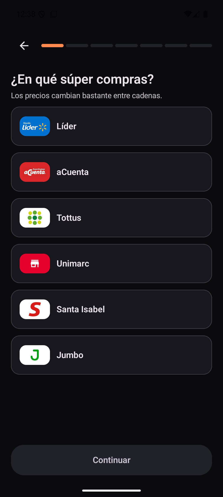
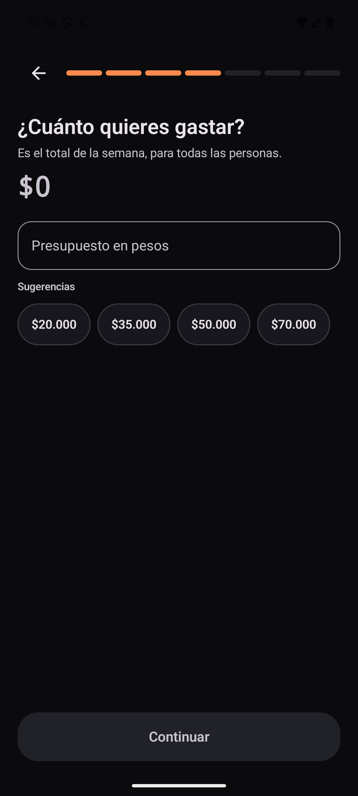
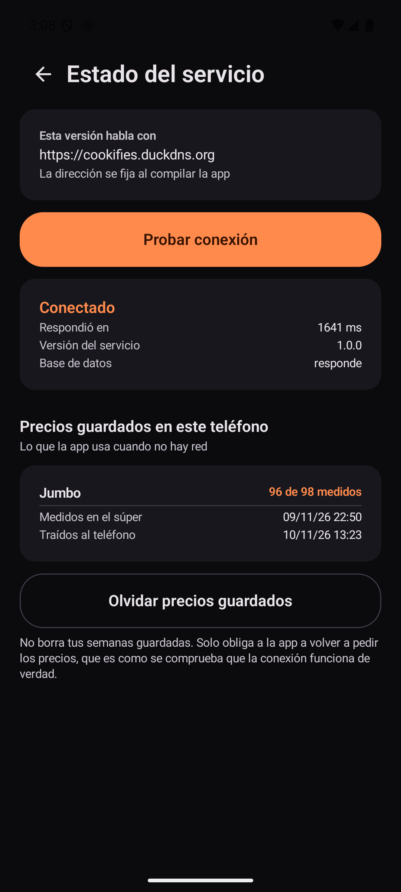
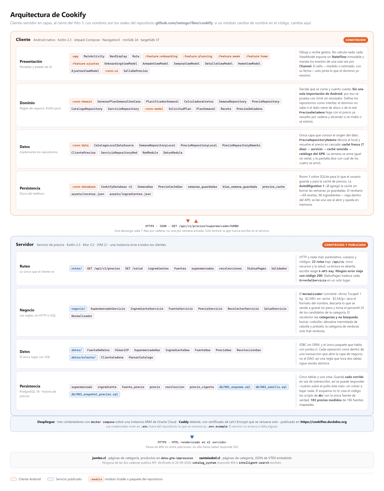
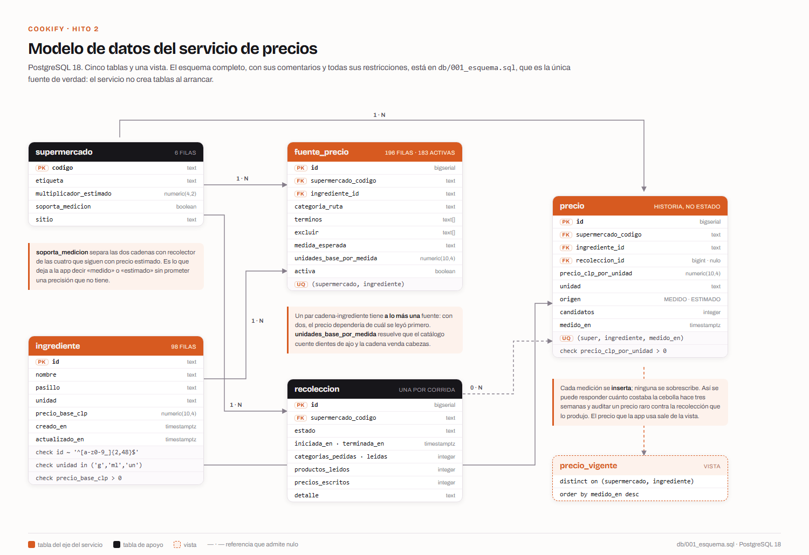

<meta charset="utf-8">
<title>Cookify · Documentación final del producto · Hito 3</title>
<link rel="stylesheet" href="https://fonts.googleapis.com/css2?family=Bricolage+Grotesque:opsz,wght@12..96,600;12..96,700;12..96,800&family=Archivo:ital,wght@0,400;0,500;0,600;0,700;1,400&display=swap">
<style>
/*
 * Documentacion final del Hito 3. Se imprime con:
 *   msedge --headless=new --print-to-pdf=final-cookify.pdf --no-pdf-header-footer
 *
 * El CSS es el mismo de los documentos del Hito 1 y del Hito 2: mismas medidas
 * de hoja, misma tipografia, mismas piezas. Lo propio de este documento son los
 * bloques .dec de la bitacora, al final de la hoja de estilo.
 *
 * Que ninguna hoja desborde se comprueba con tools/medir_desborde.js, no a ojo.
 * Los numeros de pagina del indice estan verificados contra el PDF generado.
 */
@page { size: letter; margin: 0; }

:root {
  --papel:   #FDFCFB;
  --tinta:   #17161A;
  --media:   #4E4952;
  --suave:   #877F8C;
  --linea:   #E6E0E6;
  --ambar:   #D75A20;
  --ambar-suave: #FDF2EC;
  --oscuro:  #0B0B0E;
  --display: "Bricolage Grotesque", "Segoe UI", system-ui, sans-serif;
  --cuerpo:  "Archivo", "Segoe UI", system-ui, sans-serif;
}

* { box-sizing: border-box; margin: 0; padding: 0;
    -webkit-print-color-adjust: exact; print-color-adjust: exact; }

html { background: #55505a; }
body { font-family: var(--cuerpo); color: var(--tinta); font-size: 9.4pt; line-height: 1.45; }

/* Cada .hoja es una pagina carta exacta. */
.hoja {
  width: 8.5in; height: 11in; background: var(--papel);
  margin: 0 auto; padding: 0.92in 0.95in 0.8in;
  position: relative; overflow: hidden;
  page-break-after: always; break-after: page;
}
.hoja:last-child { page-break-after: auto; break-after: auto; }
@media screen { .hoja { margin-bottom: 18px; box-shadow: 0 8px 26px rgba(0,0,0,.4); } }

/* ---- encabezado y pie corridos ---- */
.corrido {
  position: absolute; top: 0.5in; left: 0.95in; right: 0.95in;
  display: flex; justify-content: space-between; align-items: center;
  font-size: 8pt; color: var(--suave); letter-spacing: .3px;
  padding-bottom: 5px; border-bottom: 1px solid var(--linea);
}
.corrido .m { font-family: var(--display); font-weight: 700; color: var(--tinta); letter-spacing: -.2px; }
.corrido .m i { color: var(--ambar); font-style: normal; }
.folio {
  position: absolute; bottom: 0.52in; left: 0.95in; right: 0.95in;
  display: flex; justify-content: space-between;
  font-size: 8pt; color: var(--suave);
  padding-top: 5px; border-top: 1px solid var(--linea);
}

/* ---- tipografia ---- */
h1 { font-family: var(--display); font-size: 25pt; font-weight: 700; letter-spacing: -.7px;
     line-height: 1.12; margin-bottom: 4pt; text-wrap: balance; }
h2 { font-family: var(--display); font-size: 13.5pt; font-weight: 700; letter-spacing: -.3px;
     margin: 13pt 0 5pt; }
h3 { font-family: var(--display); font-size: 11.5pt; font-weight: 600; margin: 13pt 0 4pt; }
.seccion { font-family: var(--display); font-size: 8.5pt; font-weight: 700; letter-spacing: 2px;
           text-transform: uppercase; color: var(--ambar); margin-bottom: 9pt; }
.bajada { font-size: 12pt; color: var(--media); line-height: 1.5; margin-bottom: 15pt; max-width: 46em; }
p { margin-bottom: 7pt; }
p + h2, ul + h2, table + h2, figure + h2, .caja + h2 { margin-top: 17pt; }
strong { font-weight: 600; }
em { font-style: italic; }
a { color: var(--ambar); text-decoration: none; }

ul, ol { margin: 0 0 8pt 1.1em; }
li { margin-bottom: 4pt; }
ul.limpia { list-style: none; margin-left: 0; }
ul.limpia li { padding-left: 1em; text-indent: -1em; }
ul.limpia li::before { content: "— "; color: var(--ambar); }

/* ---- piezas ---- */
.cifras { display: flex; gap: 12pt; margin: 12pt 0; }
.cifra { flex: 1; background: var(--ambar-suave); border-radius: 8px; padding: 10pt 11pt; }
.cifra .n { font-family: var(--display); font-size: 19pt; font-weight: 700; color: var(--ambar);
            line-height: 1; letter-spacing: -.5px; }
.cifra .t { font-size: 8.4pt; color: var(--media); margin-top: 4pt; line-height: 1.35; }

table { width: 100%; border-collapse: collapse; margin: 8pt 0; font-size: 8.8pt; }
th { text-align: left; font-weight: 600; font-size: 7.6pt; text-transform: uppercase;
     letter-spacing: .7px; color: var(--suave); padding: 5pt 7pt 5pt 0;
     border-bottom: 1.5px solid var(--tinta); }
td { padding: 4pt 6pt 4pt 0; border-bottom: 1px solid var(--linea); vertical-align: top; }
td.num, th.num { text-align: right; font-variant-numeric: tabular-nums; padding-right: 0; }
tr.destaca td { background: var(--ambar-suave); font-weight: 600; }

.caja { border-left: 3px solid var(--ambar); background: var(--ambar-suave);
        padding: 7pt 11pt; margin: 9pt 0; border-radius: 0 7px 7px 0; }
.caja p:last-child { margin-bottom: 0; }
.caja .rotulo { font-family: var(--display); font-size: 8pt; font-weight: 700; letter-spacing: 1.4px;
                text-transform: uppercase; color: var(--ambar); margin-bottom: 4pt; }

.cita { font-family: var(--display); font-size: 13pt; font-weight: 600; line-height: 1.35;
        color: var(--tinta); margin: 13pt 0; padding-left: 13pt; border-left: 3px solid var(--ambar);
        letter-spacing: -.2px; }

figure { margin: 11pt 0; break-inside: avoid; }
figure img { width: 100%; max-height: 5.4in; object-fit: contain; display: block; margin-inline: auto; border: 1px solid var(--linea); border-radius: 6px; }
figcaption { font-size: 8.2pt; color: var(--suave); margin-top: 5pt; line-height: 1.4; }
figcaption b { color: var(--media); font-weight: 600; }

.capturas { display: flex; gap: 9pt; margin: 11pt 0; justify-content: center; }
.capturas figure { flex: 0 1 auto; margin: 0; }
.capturas img { height: 2.24in; width: auto; border-radius: 9px; border: 1px solid var(--linea); }

code, .mono { font-family: ui-monospace, "Cascadia Mono", Consolas, monospace; font-size: 8.8pt; }

/* ---- indice ---- */
.indice { list-style: none; margin: 0; }
.indice li { display: flex; align-items: baseline; gap: 6pt; margin-bottom: 7pt; font-size: 10.4pt; }
.indice .t { white-space: nowrap; }
.indice .p { flex: 1; border-bottom: 1px dotted var(--linea); transform: translateY(-3px); }
.indice .n { font-variant-numeric: tabular-nums; color: var(--suave); }
.indice li.mayor { font-family: var(--display); font-weight: 700; font-size: 11.4pt; margin-top: 13pt; }
.indice li.mayor .n { color: var(--tinta); }
.indice li.menor { padding-left: 15pt; font-size: 9.8pt; color: var(--media); margin-bottom: 5pt; }

/* ---- referencias ---- */
.refs { font-size: 9.6pt; }
.refs p { padding-left: 1.6em; text-indent: -1.6em; margin-bottom: 8pt; line-height: 1.5; }

/* ---- piezas propias de este documento ---- */
.cuadro { display: grid; grid-template-columns: 1fr 1fr; gap: 9pt; margin: 10pt 0; }
.cuadro > div { border: 1px solid var(--linea); border-radius: 8px; padding: 8pt 10pt; }
.cuadro .r { font-family: var(--display); font-size: 8pt; font-weight: 700;
             letter-spacing: 1.3px; text-transform: uppercase; color: var(--ambar);
             margin-bottom: 4pt; }
.cuadro p { font-size: 8.8pt; margin-bottom: 0; }
pre { font-family: ui-monospace, "Cascadia Mono", Consolas, monospace; font-size: 8.1pt;
      line-height: 1.45; background: #F7F4F7; border: 1px solid var(--linea);
      border-radius: 7px; padding: 8pt 10pt; margin: 8pt 0; overflow: hidden;
      white-space: pre-wrap; }
pre b { color: var(--ambar); font-weight: 600; }
.pasos { counter-reset: paso; list-style: none; margin-left: 0; }
.pasos li { counter-increment: paso; position: relative; padding-left: 22pt;
            margin-bottom: 7pt; }
.pasos li::before { content: counter(paso); position: absolute; left: 0; top: 1pt;
                    width: 15pt; height: 15pt; border-radius: 50%;
                    background: var(--ambar); color: #fff; font-family: var(--display);
                    font-size: 8.5pt; font-weight: 700; display: flex;
                    align-items: center; justify-content: center; }
.pasos li .capa { font-family: var(--display); font-size: 7.6pt; font-weight: 700;
                  letter-spacing: 1.2px; text-transform: uppercase; color: var(--suave);
                  display: block; }
table.compacta { font-size: 8.1pt; }
table.compacta td, table.compacta th { padding: 3pt 5pt 3pt 0; }

/* ---- piezas propias de este documento: la bitacora ---- */
.dec { border: 1px solid var(--linea); border-radius: 9px;
       padding: 7pt 11pt 8pt; margin: 0 0 7.5pt; break-inside: avoid; }
.dec .fecha { font-family: var(--display); font-size: 7.4pt; font-weight: 700;
              letter-spacing: 1.3px; text-transform: uppercase; color: var(--ambar); }
.dec h4 { font-family: var(--display); font-size: 10.6pt; font-weight: 700;
          letter-spacing: -.2px; margin: 1pt 0 0; line-height: 1.2; }
.dec dl { display: grid; grid-template-columns: 70pt 1fr; gap: 2.5pt 9pt; margin: 5pt 0 0; }
.dec dt { font-family: var(--display); font-size: 7.3pt; font-weight: 700;
          letter-spacing: .7px; text-transform: uppercase; color: var(--suave);
          padding-top: 1.2pt; }
.dec dd { font-size: 8.6pt; color: var(--media); line-height: 1.42; }
.dec dd.malo { color: var(--tinta); }
.dec dd b, .dec dd code { color: var(--tinta); }

/* El indice de este documento tiene 30 entradas y hay que apretarlo. */
.indice li { margin-bottom: 3.3pt; font-size: 9.5pt; }
.indice li.mayor { font-size: 10.2pt; margin-top: 6.5pt; }
.indice li.menor { font-size: 8.8pt; margin-bottom: 2.5pt; padding-left: 12pt; }
</style>
<!-- ══════════════ 1 · TAPA ══════════════ -->
<section class="hoja" style="background:var(--oscuro);color:#F5F1F0;padding:0">
  <div style="position:absolute;top:-2.2in;left:50%;transform:translateX(-50%);width:9in;height:7in;
              border-radius:50%;background:radial-gradient(closest-side,rgba(255,122,61,.34),rgba(255,122,61,.07) 58%,transparent 74%)"></div>
  <div style="position:relative;padding:1.5in 1.1in 0;text-align:center">
    
    <div style="font-family:var(--display);font-size:68px;font-weight:800;letter-spacing:-2.4px;line-height:1">
      Cook<span style="color:#FF7A3D">ify</span></div>
    <p style="margin:.3in auto 0;max-width:5.4in;font-size:16.5px;line-height:1.5;color:#C9C2CC;font-weight:300">
      En septiembre era una promesa. Hoy es un
      <b style="color:#F5F1F0;font-weight:600">APK que se instala</b>
      y habla con un servicio publicado que mide el precio en el supermercado.</p>
    <div style="display:flex;justify-content:center;gap:.42in;margin:.58in auto 0;padding-top:.34in;
                border-top:1px solid rgba(255,255,255,.11);max-width:6in">
      <div><div style="font-size:25px;font-weight:700;color:#FF7A3D;letter-spacing:-.6px">139</div>
        <div style="font-size:10.5px;color:#8E8792;margin-top:3px;line-height:1.35">verificaciones automáticas:<br>91 pruebas y 48 del contrato</div></div>
      <div><div style="font-size:25px;font-weight:700;color:#FF7A3D;letter-spacing:-.6px">183</div>
        <div style="font-size:10.5px;color:#8E8792;margin-top:3px;line-height:1.35">precios medidos en el súper,<br>no estimados</div></div>
      <div><div style="font-size:25px;font-weight:700;color:#FF7A3D;letter-spacing:-.6px">4</div>
        <div style="font-size:10.5px;color:#8E8792;margin-top:3px;line-height:1.35">escalones de respaldo para que<br>la semana se arme sin señal</div></div>
    </div>
  </div>
  <div style="position:absolute;left:1.1in;right:1.1in;bottom:2.35in;text-align:center">
    <div style="font-size:10.5px;letter-spacing:2.4px;text-transform:uppercase;color:#FF7A3D;font-weight:700;margin-bottom:9px">
      Documentación final del producto · Hito 3</div>
    <div style="font-size:22px;font-weight:600;letter-spacing:-.3px">Proyecto semestral · Arquitectura de Desarrollo (Móvil y Web)</div>
  </div>
  <div style="position:absolute;left:1.1in;right:1.1in;bottom:.85in;display:flex;justify-content:space-between;
              align-items:flex-end;padding-top:.2in;border-top:1px solid rgba(255,255,255,.11);
              font-size:11.5px;color:#8E8792;line-height:1.6">
    <div><b style="color:#F5F1F0;font-weight:600;display:block;font-size:13px">Ernesto Guillén Guerrero</b>300050336</div>
    <div style="text-align:right"><b style="color:#F5F1F0;font-weight:600;display:block;font-size:13px">INGT1003</b>
      Escuela de Ingeniería Civil · Universidad Mayor<br>Segundo semestre 2026</div>
  </div>
</section>

<!-- ══════════════ 2 · ÍNDICE ══════════════ -->
<section class="hoja">
  <div class="corrido"><span class="m">Cook<i>ify</i></span><span>Documentación final · Hito 3</span></div>
  <h1 style="font-size:22pt">Índice</h1>
  <div style="margin-top:9pt">
  <ul class="indice">
    <li class="mayor"><span class="t">Introducción</span><span class="p"></span><span class="n">3</span></li>
    <li class="mayor"><span class="t">1 · El producto que se entrega</span><span class="p"></span><span class="n">4</span></li>
    <li class="menor"><span class="t">1.1 Qué hace y para quién</span><span class="p"></span><span class="n">4</span></li>
    <li class="menor"><span class="t">1.2 El producto en cifras</span><span class="p"></span><span class="n">4</span></li>
    <li class="menor"><span class="t">1.3 El recorrido completo, paso a paso</span><span class="p"></span><span class="n">5</span></li>
    <li class="menor"><span class="t">1.4 Qué puede ejecutar el evaluador sin ayuda</span><span class="p"></span><span class="n">5</span></li>
    <li class="mayor"><span class="t">2 · Arquitectura final</span><span class="p"></span><span class="n">6</span></li>
    <li class="menor"><span class="t">2.1 El diagrama al día del cierre</span><span class="p"></span><span class="n">6</span></li>
    <li class="menor"><span class="t">2.2 El cliente, capa por capa</span><span class="p"></span><span class="n">7</span></li>
    <li class="menor"><span class="t">2.3 El servicio, capa por capa</span><span class="p"></span><span class="n">7</span></li>
    <li class="mayor"><span class="t">3 · La integración: cómo la app habla con el servicio</span><span class="p"></span><span class="n">8</span></li>
    <li class="menor"><span class="t">3.1 El punto exacto donde se conectó</span><span class="p"></span><span class="n">8</span></li>
    <li class="menor"><span class="t">3.2 La cascada de cuatro escalones</span><span class="p"></span><span class="n">8</span></li>
    <li class="menor"><span class="t">3.3 El sello de procedencia</span><span class="p"></span><span class="n">9</span></li>
    <li class="menor"><span class="t">3.4 Por qué la caché dura siete días</span><span class="p"></span><span class="n">9</span></li>
    <li class="menor"><span class="t">3.5 Lo que la app no escribe en el servicio</span><span class="p"></span><span class="n">9</span></li>
    <li class="mayor"><span class="t">4 · Validación, errores y estados</span><span class="p"></span><span class="n">10</span></li>
    <li class="mayor"><span class="t">5 · Ejecución reproducible y despliegue</span><span class="p"></span><span class="n">11</span></li>
    <li class="mayor"><span class="t">6 · Bitácora de decisiones</span><span class="p"></span><span class="n">12</span></li>
    <li class="menor"><span class="t">6.1 Cómo leer la bitácora</span><span class="p"></span><span class="n">12</span></li>
    <li class="menor"><span class="t">6.2 Septiembre · el andamiaje y la promesa</span><span class="p"></span><span class="n">13</span></li>
    <li class="menor"><span class="t">6.3 Octubre · el servicio y sus datos</span><span class="p"></span><span class="n">14</span></li>
    <li class="menor"><span class="t">6.4 Noviembre · la integración y el despliegue</span><span class="p"></span><span class="n">16</span></li>
    <li class="mayor"><span class="t">7 · Qué cambió desde el Hito 1</span><span class="p"></span><span class="n">18</span></li>
    <li class="mayor"><span class="t">8 · Cómo se verifica todo lo anterior</span><span class="p"></span><span class="n">19</span></li>
    <li class="mayor"><span class="t">Conclusión</span><span class="p"></span><span class="n">20</span></li>
    <li class="mayor"><span class="t">Limitaciones declaradas</span><span class="p"></span><span class="n">21</span></li>
    <li class="mayor"><span class="t">Bibliografía</span><span class="p"></span><span class="n">22</span></li>
    <li class="mayor"><span class="t">Anexo A · Uso de inteligencia artificial</span><span class="p"></span><span class="n">24</span></li>
    <li class="mayor"><span class="t">Anexo B · Análisis de datos personales</span><span class="p"></span><span class="n">25</span></li>
    <li class="mayor"><span class="t">Anexo C · El modelo de datos del servicio</span><span class="p"></span><span class="n">27</span></li>
  </ul>
  </div>
  <div class="folio"><span>Cookify · Hito 3</span><span>2</span></div>
</section>

<!-- ══════════════ 3 · INTRODUCCIÓN ══════════════ -->
<section class="hoja">
  <div class="corrido"><span class="m">Cook<i>ify</i></span><span>Documentación final · Hito 3</span></div>
  <div class="seccion">Introducción</div>
  <h1>Lo que se prometió en septiembre, instalado y funcionando.</h1>
  <p class="bajada">
    El Hito 1 vendió una app que arma una semana de almuerzos que cabe en el presupuesto,
    con el precio del supermercado donde se compra. El Hito 2 construyó el servicio que mide
    ese precio. Este documento cuenta cómo quedaron unidos y qué costó unirlos.
  </p>

  <p>
    Lo que se entrega no es una maqueta ni una demostración preparada: es un archivo de
    instalación que cualquiera puede bajar desde el repositorio, instalar en un teléfono con
    Android 7 o superior, y usar sin configurar nada. Al abrirlo, la app pregunta siete cosas
    —supermercado, personas, días, presupuesto, antojos, restricción alimentaria y con qué se
    cocina—, arma la semana, la guarda, y la semana sigue ahí al reabrir. Los precios con que
    la armó los pidió a un servicio publicado en <b>https://cookifies.duckdns.org</b>, que
    responde desde una instancia en la nube con certificado propio.
  </p>

  <div class="caja">
    <div class="rotulo">La frase que define este hito</div>
    <p>
      «Que el docente pueda tomar el teclado y recorrer el flujo principal completo sin ayuda
      del equipo». Todo lo que sigue —diagramas, bitácora, manual— existe para respaldar ese
      momento, no para reemplazarlo. El capítulo 1 dice exactamente qué se puede ejecutar y
      con qué datos.
    </p>
  </div>

  <h2>Lo que hay, en una página</h2>

  <div class="cuadro">
    <div>
      <div class="r">El producto</div>
      <p>App Android nativa en Kotlin y Jetpack Compose, en seis módulos de interfaz y seis de
         núcleo. 69 recetas chilenas y 98 ingredientes dentro del archivo de instalación.</p>
    </div>
    <div>
      <div class="r">El servicio</div>
      <p>Kotlin sobre Ktor, cuatro capas, PostgreSQL 18. 22 rutas bajo <code>/api/v1</code>,
         publicado con TLS en tres contenedores sobre una instancia ARM de Oracle Cloud.</p>
    </div>
    <div>
      <div class="r">La integración</div>
      <p>El precio se resuelve en cascada de cuatro escalones, con caché de siete días en el
         teléfono. La semana se arma igual sin señal y la pantalla dice con qué se armó.</p>
    </div>
    <div>
      <div class="r">La verificación</div>
      <p>91 pruebas automatizadas —58 de la app, 33 del servicio—, 48 comprobaciones del
         contrato de la interfaz contra el servicio corriendo, y análisis estático sin avisos.</p>
    </div>
  </div>

  <h2>Cómo leer este documento</h2>
  <p>
    Los capítulos 1 a 5 describen <b>el producto tal como quedó</b>: qué hace, cómo está
    armado, cómo se conectaron las dos mitades, cómo se comporta cuando algo falla y cómo se
    levanta en otro equipo. El capítulo 6 es la <b>bitácora</b>: veinte decisiones con su
    fecha, las alternativas que había, el motivo y —cuando corresponde— lo que salió mal por
    haberlas tomado así. El 7 compara con lo prometido en septiembre y el 8 explica cómo
    comprobar cada afirmación de los anteriores sin creerle a nadie. Las limitaciones están
    declaradas en su propia sección, antes de la bibliografía, y no repartidas en notas al pie.
  </p>

  <div class="folio"><span>Cookify · Hito 3</span><span>3</span></div>
</section>

<!-- ══════════════ 4 · PRODUCTO 1 ══════════════ -->
<section class="hoja">
  <div class="corrido"><span class="m">Cook<i>ify</i></span><span>1 · El producto que se entrega</span></div>
  <div class="seccion">Capítulo 1</div>
  <h1>El producto que se entrega</h1>
  <p class="bajada">
    Un recorrido cerrado, de la primera pregunta al dato que sobrevive a cerrar la app.
  </p>

  <h2>1.1 Qué hace y para quién</h2>
  <p>
    Cookify es para quien cocina en casa con un presupuesto contado y no sabe cuánto le va a
    costar la semana. El problema no es la falta de recetas: es que el costo recién aparece en
    la caja del supermercado. La app invierte ese orden. Primero se declara cuánto se puede
    gastar; después aparece la semana que cabe en esa plata, con el costo de cada día calculado
    y los ingredientes escalados a la cantidad de personas.
  </p>
  <p>
    Si el presupuesto no alcanza, la app no falla en silencio: dice cuánto falta y ofrece
    armarla por el mínimo posible, para que la decisión sea del usuario y no del programa.
  </p>

  <div class="capturas">
    <figure></figure>
    <figure></figure>
    <figure></figure>
  </div>
  <figcaption style="margin-top:-5pt">
    <b>Dos de las siete preguntas, y la prueba de conexión.</b> El cuestionario no cambió desde
    el Hito 1. La tercera captura es de la app instalada hablando con el servicio publicado:
    respondió en 1.641 ms y su base responde.
  </figcaption>

  <h2>1.2 El producto en cifras</h2>

  <div class="cifras">
    <div class="cifra"><div class="n">69</div><div class="t">recetas chilenas, con tiempo, artefactos y pasos</div></div>
    <div class="cifra"><div class="n">98</div><div class="t">ingredientes con precio por gramo, mililitro o unidad</div></div>
    <div class="cifra"><div class="n">183</div><div class="t">precios medidos en el súper, de 196 fuentes mapeadas</div></div>
    <div class="cifra"><div class="n">22</div><div class="t">rutas en el contrato de la interfaz de programación</div></div>
  </div>

  <table>
    <tr><th>Pieza</th><th>Qué es</th><th>Dónde está</th></tr>
    <tr><td>La app</td><td>APK de depuración, 20,2 MB, Android 7 o superior</td><td>Releases del repositorio</td></tr>
    <tr><td>El servicio</td><td>22 rutas, lectura abierta, escritura con clave</td><td><code>cookifies.duckdns.org</code></td></tr>
    <tr><td>La base</td><td>PostgreSQL 18, cinco tablas y una vista</td><td><code>db/001_esquema.sql</code></td></tr>
    <tr><td>El manual</td><td>Requisitos, pasos, datos de prueba, siete fallas</td><td><code>docs/manual-cookify.md</code></td></tr>
  </table>

  <p>
    Ninguna de esas cifras es una estimación: las recetas y los ingredientes los cuenta una
    prueba, los 183 precios son filas de la tabla <code>precio</code> con origen medido, y las
    22 rutas están listadas una por una en el contrato de la interfaz.
  </p>

  <div class="folio"><span>Cookify · Hito 3</span><span>4</span></div>
</section>

<!-- ══════════════ 5 · PRODUCTO 2 ══════════════ -->
<section class="hoja">
  <div class="corrido"><span class="m">Cook<i>ify</i></span><span>1 · El producto que se entrega</span></div>

  <h2 style="margin-top:0">1.3 El recorrido completo, paso a paso</h2>
  <p>
    Este es el flujo principal, el que la evaluación pide poder ejecutar sin ayuda. Cada paso
    indica qué capa trabaja, para que el recorrido se pueda leer junto al diagrama del
    capítulo 2.
  </p>

  <ol class="pasos">
    <li><span class="capa">Presentación</span>
      <b>Se abre la app.</b> La portada consulta las semanas guardadas y, la primera vez,
      muestra el estado vacío con el botón para armar la primera.</li>
    <li><span class="capa">Presentación → dominio</span>
      <b>Se contestan las siete preguntas.</b> Cada respuesta queda en el estado del
      cuestionario; ninguna sale del teléfono. Al terminar se construye una
      <code>SolicitudPlan</code>, que es el único objeto que el dominio recibe.</li>
    <li><span class="capa">Datos → red</span>
      <b>Se piden los precios.</b> El repositorio de precios resuelve en cascada: si la caché
      del teléfono tiene menos de siete días la usa, y si no llama a
      <code>GET /api/v1/precios?supermercado=JUMBO</code> contra el servicio publicado.</li>
    <li><span class="capa">Red → datos</span>
      <b>El servicio responde y la respuesta se guarda.</b> Llega el precio por unidad de cada
      ingrediente que el servicio conoce, con la fecha en que se midió. Eso queda en la tabla
      <code>precios_cache</code> de la base del teléfono.</li>
    <li><span class="capa">Dominio</span>
      <b>Se arma la semana.</b> El planificador elige un plato por día cumpliendo la
      restricción alimentaria, los artefactos disponibles y los antojos, y la calculadora
      multiplica cada ingrediente por las personas y por su precio. Si el total no cabe en el
      presupuesto, devuelve el faltante en vez de una semana cara.</li>
    <li><span class="capa">Presentación</span>
      <b>Se muestra la semana.</b> Cada día con su plato, su tiempo y su costo, y arriba el
      sello que dice si el precio se midió o se estimó y cuándo.</li>
    <li><span class="capa">Datos → persistencia</span>
      <b>Se guarda.</b> La semana entra a dos tablas de Room en el teléfono. Al cerrar la app
      y volver a abrirla, aparece en la portada con su nombre y su costo.</li>
  </ol>

  <h2>1.4 Qué puede ejecutar el evaluador sin ayuda</h2>
  <p>
    El manual de uso trae los datos de prueba exactos y las variantes que conviene probar. En
    resumen, tres recorridos distintos, ninguno de los cuales necesita que alguien del equipo
    toque el teclado:
  </p>
  <table class="compacta">
    <tr><th>Recorrido</th><th>Con qué datos</th><th>Qué debe ocurrir</th></tr>
    <tr><td>El camino feliz</td><td>Jumbo · 4 personas · lunes, miércoles y viernes · $45.000</td>
      <td>Semana armada, guardada y visible después de cerrar la app</td></tr>
    <tr><td>Presupuesto insuficiente</td><td>El mismo, con $6.000</td>
      <td>La app dice cuánto falta y ofrece armarla por el mínimo</td></tr>
    <tr><td>Restricción dura</td><td>Restricción «vegano»</td>
      <td>Ningún plato con carne, pescado, huevo ni lácteos en los siete días</td></tr>
  </table>
  <p>
    Y para comprobar que la app no está mostrando datos de ejemplo: engranaje de la portada →
    <em>Estado del servicio</em> → <em>Probar conexión</em>. Esa pantalla dice contra qué
    dirección se compiló el APK, si el servicio responde, cuánto tardó y cuándo se midió el
    precio que se está usando. <em>Olvidar precios guardados</em>, en la misma pantalla, borra
    la caché para forzar una llamada real en el siguiente armado.
  </p>

  <div class="folio"><span>Cookify · Hito 3</span><span>5</span></div>
</section>

<!-- ══════════════ 6 · ARQUITECTURA (DIAGRAMA) ══════════════ -->
<section class="hoja">
  <div class="corrido"><span class="m">Cook<i>ify</i></span><span>2 · Arquitectura final</span></div>
  <div class="seccion">Capítulo 2</div>
  <h1 style="font-size:21pt">Arquitectura final</h1>
  <h2 style="margin-top:7pt">2.1 El diagrama al día del cierre</h2>
  <figure style="margin-top:6pt">
    
    <figcaption>
      <b>Cliente y servidor, en capas, al cierre del Hito 3.</b> Los nombres son los reales
      del repositorio: si un módulo cambia de nombre en el código, cambia en el diagrama. La
      fuente es <code>docs/fuentes/arquitectura.html</code> y el PNG del repositorio mide
      3.000 px de ancho, donde cada etiqueta se lee sin esfuerzo.
    </figcaption>
  </figure>
  <div class="folio"><span>Cookify · Hito 3</span><span>6</span></div>
</section>

<!-- ══════════════ 7 · ARQUITECTURA (CAPAS) ══════════════ -->
<section class="hoja">
  <div class="corrido"><span class="m">Cook<i>ify</i></span><span>2 · Arquitectura final</span></div>

  <h2 style="margin-top:0">2.2 El cliente, capa por capa</h2>
  <p>
    La regla que ordena el cliente es que el dominio no importa nada de Android. No es una
    convención sostenida por disciplina: el módulo <code>:core:domain</code> no declara la
    dependencia del SDK, así que una importación de Android ahí no compila. Esa es la razón
    por la que el motor de planificación se prueba en la máquina de desarrollo, en
    milisegundos y sin emulador.
  </p>
  <table class="compacta">
    <tr><th>Capa</th><th>Módulos</th><th>Qué puede y qué no</th></tr>
    <tr><td><b>Presentación</b></td>
      <td><code>:app</code>, <code>:feature:onboarding</code>, <code>planning</code>,
          <code>week</code>, <code>home</code>, <code>ajustes</code>, <code>:core:ui</code></td>
      <td>Dibuja y recibe gestos. Cada ViewModel expone un <code>StateFlow</code> inmutable.
          No calcula costos ni consulta la base.</td></tr>
    <tr><td><b>Dominio</b></td>
      <td><code>:core:domain</code>, <code>:core:model</code></td>
      <td>Decide qué se come y cuánto cuesta. Define los repositorios como interfaz; no sabe
          si el dato viene de disco o de la red. Kotlin puro.</td></tr>
    <tr><td><b>Datos</b></td>
      <td><code>:core:data</code></td>
      <td>Única capa que conoce el origen del dato: el servicio, la caché o el catálogo
          empaquetado. Implementa las interfaces del dominio.</td></tr>
    <tr><td><b>Persistencia</b></td>
      <td><code>:core:database</code></td>
      <td>Room 3 sobre SQLite: las semanas guardadas y la caché de precios. Nada de reglas.</td></tr>
  </table>

  <h2>2.3 El servicio, capa por capa</h2>
  <p>
    En el servicio la regla es la inversa y igual de concreta: el SQL vive solo en
    <code>datos/</code> y el HTTP solo en <code>ruteo/</code>. La capa de negocio no conoce
    ninguno de los dos, y por eso el normalizador —que es el corazón del servicio— se prueba
    con dieciocho pruebas que no levantan ni base de datos ni servidor.
  </p>
  <table class="compacta">
    <tr><th>Capa</th><th>Paquete</th><th>Qué puede y qué no</th></tr>
    <tr><td><b>Ruteo</b></td><td><code>ruteo/</code></td>
      <td>Parámetros, cuerpos y códigos de estado. Lo único que el cliente ve. Ninguna regla
          de negocio ni consulta.</td></tr>
    <tr><td><b>Negocio</b></td><td><code>negocio/</code></td>
      <td>Las reglas: normalizar, validar, decidir qué producto representa al ingrediente.
          Abre la transacción. Sin HTTP ni SQL.</td></tr>
    <tr><td><b>Datos</b></td><td><code>datos/</code></td>
      <td>El único lugar con SQL, por JDBC con HikariCP. Los DAO no abren transacciones: las
          recibe de la capa de negocio.</td></tr>
    <tr><td><b>Externo</b></td><td><code>datos/externo/</code></td>
      <td>El único paquete que habla con jumbo.cl y santaisabel.cl. Si mañana las cadenas
          publicaran una interfaz de programación, se cambia aquí y nada más.</td></tr>
  </table>

  <div class="caja">
    <div class="rotulo">Cómo se comprueba que las capas no son solo carpetas</div>
    <p>
      Buscar <code>SELECT</code> fuera de <code>datos/</code> no devuelve nada, y buscar
      <code>call.respond</code> fuera de <code>ruteo/</code> tampoco. En el cliente, el motor
      de planificación se ejecuta en una prueba de JUnit sin emulador: si tuviera una
      dependencia de Android, esa prueba no podría existir.
    </p>
  </div>

  <div class="folio"><span>Cookify · Hito 3</span><span>7</span></div>
</section>

<!-- ══════════════ 8 · INTEGRACIÓN 1 ══════════════ -->
<section class="hoja">
  <div class="corrido"><span class="m">Cook<i>ify</i></span><span>3 · La integración</span></div>
  <div class="seccion">Capítulo 3</div>
  <h1>La integración: cómo la app habla con el servicio</h1>
  <p class="bajada">
    Conectar las dos mitades era el trabajo central de este hito. Lo difícil no fue la
    llamada: fue decidir qué hace la app cuando esa llamada no llega.
  </p>

  <h2>3.1 El punto exacto donde se conectó</h2>
  <p>
    El dominio ya definía <code>PrecioRepository</code> como interfaz desde el primer día de
    septiembre, y <code>:core:data</code> la implementaba leyendo los 98 valores escritos a
    mano del catálogo empaquetado. Conectar el servicio consistió en agregar una segunda
    implementación, <code>PrecioRepositoryRemoto</code>, que <b>decora a la primera en lugar
    de reemplazarla</b>, y en cambiar una línea del módulo de inyección para que el dominio
    reciba la nueva.
  </p>
  <p>
    El motor de planificación no se enteró. No cambió una línea de
    <code>:core:domain</code>, ni una prueba del planificador, y eso es exactamente lo que se
    esperaba de haber puesto la interfaz en el dominio: el beneficio de esa decisión de
    septiembre se cobró en noviembre.
  </p>
  <p>
    Que la implementación decore y no reemplace tiene una consecuencia concreta: un
    ingrediente que el servicio no conoce —hay 13 de 196 fuentes sin precio medido— no
    desaparece de las recetas. Se queda con su estimación y la pantalla lo informa. La
    alternativa, reemplazar, habría dejado huecos en el cálculo del costo.
  </p>

  <h2>3.2 La cascada de cuatro escalones</h2>
  <p>
    El repositorio remoto nunca falla por falta de red. Resuelve el precio en cascada y
    siempre llega a algo:
  </p>
<pre><b>caché fresca</b> (&lt; 7 días)  →  <b>servicio</b>  →  <b>caché vencida</b>  →  <b>catálogo del APK</b></pre>
  <p>
    El último escalón no es opcional: sin él no se podría armar una semana sin señal, y los 98
    valores escritos a mano ya viajan dentro del archivo de instalación. Lo que se pierde al
    caer hasta ahí no es la app, es la precisión, y el resultado viene marcado como estimado
    para que la pantalla lo diga.
  </p>
  <p>
    Esta es la lógica con más riesgo de toda la integración, porque sus caminos dependen de
    cosas que en una prueba manual no se pueden provocar a voluntad: que no haya red, que la
    caché esté vencida, que el servicio responda a medias. Las diez pruebas de
    <code>CascadaDePreciosTest</code> los provocan todos, con un cliente y un DAO de mentira,
    y encontraron dos defectos antes de que llegaran al teléfono. Están en la bitácora.
  </p>

  <div class="folio"><span>Cookify · Hito 3</span><span>8</span></div>
</section>

<!-- ══════════════ 9 · INTEGRACIÓN 2 ══════════════ -->
<section class="hoja">
  <div class="corrido"><span class="m">Cook<i>ify</i></span><span>3 · La integración</span></div>

  <h2 style="margin-top:0">3.3 El sello de procedencia</h2>
  <p>
    Una app que muestra un precio sin decir de dónde salió obliga a creerle. Cookify no pide
    eso. Cada vez que el precio llega resuelto, llega con tres datos que la pantalla usa:
    de qué escalón de la cascada salió, en qué fecha se midió y si hubo conexión. Con eso, el
    sello que va sobre la semana dice una de dos cosas:
  </p>
  <table class="compacta">
    <tr><th>Lo que muestra la pantalla</th><th>Qué significa</th></tr>
    <tr><td><b>Precios medidos en el súper · 9 de noviembre</b></td>
      <td>El precio salió del servicio o de la caché, y la fecha es la de la medición en la
          cadena, no la de la descarga</td></tr>
    <tr><td><b>Sin conexión · Precios estimados</b></td>
      <td>Se intentó llamar al servicio y no se pudo; la semana se armó con el catálogo
          empaquetado</td></tr>
  </table>
  <p>
    En una semana <b>reabierta</b> desde la portada el sello no aparece, y es a propósito: ese
    costo es el del día en que se guardó, y decir hoy con qué precios se calculó sería afirmar
    algo que no se comprobó.
  </p>
  <p>
    Las dos cadenas medidas son Jumbo y Santa Isabel. En las otras cuatro el precio es
    estimado y el sello lo dice: la app no finge lo contrario. Decir «estimado» cuesta menos
    que ser desmentido por una boleta.
  </p>

  <h2>3.4 Por qué la caché dura siete días</h2>
  <p>
    Un precio de supermercado no cambia de un día para otro lo suficiente como para justificar
    una descarga diaria, y la app sirve para planificar una semana. Siete días es, además, el
    mismo número con que el servicio decide cuándo volver a medir, así que no hay dos
    frescuras distintas que puedan contradecirse.
  </p>
  <p>
    El efecto práctico es que la app hace <b>una descarga por cadena por semana</b>, no una
    por semana armada. Quien arma tres semanas el mismo día hace una sola llamada. Para un
    teléfono con datos móviles, esa diferencia importa más que cualquier optimización del
    tamaño de la respuesta.
  </p>

  <h2>3.5 Lo que la app no escribe en el servicio</h2>
  <p>
    Conviene decirlo con claridad, porque es una decisión y no un olvido: <b>la app solo lee
    del servicio</b>. La única petición que sale del teléfono es la lectura de precios. La
    semana que el usuario arma se guarda en la base de datos del teléfono, no en el servidor.
  </p>
  <p>
    El motivo es que el servicio de Cookify es un servicio de precios, no de usuarios. Hacer
    que guardara semanas obligaba a tener identidad: cuentas, autenticación y un registro de
    quién come qué, con todo lo que eso arrastra en datos personales —el anexo B lo detalla—.
    Para una app cuyo valor es funcionar con el teléfono en la mano en el pasillo del
    supermercado, incluso sin señal, el costo no se paga.
  </p>
  <div class="caja">
    <div class="rotulo">El ciclo del dato, entonces, se cierra así</div>
    <p>
      El usuario escribe sus respuestas, el servicio aporta el precio medido, la app calcula y
      lo muestra, y el resultado persiste en la base del teléfono y sobrevive a cerrar la app.
      Hay escritura con persistencia real y hay lectura del servicio, pero el dato que persiste
      y el dato que viaja no son el mismo. En las limitaciones declaradas, en la página 21,
      está escrito qué haría falta para que lo fueran.
    </p>
  </div>

  <div class="folio"><span>Cookify · Hito 3</span><span>9</span></div>
</section>

<!-- ══════════════ 10 · VALIDACIÓN ══════════════ -->
<section class="hoja">
  <div class="corrido"><span class="m">Cook<i>ify</i></span><span>4 · Validación, errores y estados</span></div>
  <div class="seccion">Capítulo 4</div>
  <h1>Validación, errores y estados</h1>
  <p class="bajada">
    Una pantalla en blanco es un error de diseño. Lo mismo un error de red mostrado como un
    error de red a quien solo quiere armar su semana.
  </p>

  <h2>4.1 En el cliente</h2>
  <p>
    El cuestionario no deja avanzar con una respuesta inválida, y eso no se resuelve con
    mensajes sino con la forma del control: los días se eligen de una lista, las personas de un
    rango, el presupuesto en un campo numérico que no acepta letras ni negativos. El botón de
    continuar está deshabilitado mientras la respuesta no sea válida, así que no hay una
    pantalla de error que mostrar.
  </p>
  <p>
    El único error de verdad que puede ocurrir en el recorrido es que la semana no se pueda
    armar con el presupuesto dado. Ese caso tiene su propia pantalla, con el faltante en pesos
    y la opción de armarla por el mínimo posible. No es una alerta: es una salida.
  </p>

  <h2>4.2 En el servidor</h2>
  <p>
    Ningún error viaja con código 200. Cada falla se representa como un error del servicio y un
    único punto —el plugin de estados— lo traduce al código HTTP que corresponde, así que no
    hay dos rutas que respondan distinto a la misma clase de problema.
  </p>
  <table class="compacta">
    <tr><th>Situación</th><th>Código</th><th>Cuerpo</th></tr>
    <tr><td>Parámetro con valor que no existe en el dominio</td><td>400</td><td>Qué parámetro y qué valores admite</td></tr>
    <tr><td>Escritura sin la cabecera <code>X-API-Key</code> o con clave equivocada</td><td>401</td><td>Que falta la credencial, sin decir cuál</td></tr>
    <tr><td>Recurso inexistente</td><td>404</td><td>Qué se buscó</td></tr>
    <tr><td>Crear algo que ya existe, o medición repetida</td><td>409</td><td>Que ya existe, sin reemplazar en silencio</td></tr>
    <tr><td>Borrado correcto</td><td>204</td><td>Sin cuerpo</td></tr>
  </table>
  <p>
    Las 48 comprobaciones de <code>tools/probar_api.sh</code> no verifican solo que las rutas
    respondan: verifican que respondan <b>el código correcto</b>, incluidos los de error. Trece
    de esas 48 esperan un 400, un 401, un 404 o un 409. Una interfaz que devuelve 200 para todo
    pasaría la mitad de esa batería y fallaría la otra.
  </p>

  <h2>4.3 Los tres estados de la interfaz</h2>
  <table class="compacta">
    <tr><th>Estado</th><th>Dónde se ve</th><th>Cómo se evitó el error típico</th></tr>
    <tr><td><b>Cargando</b></td><td>Portada, armado, semana, detalle</td>
      <td>El estado arranca en «cargando» y no en «lista vacía»: mostrar el vacío por un
          instante antes de que lleguen los datos se lee como que no hay nada</td></tr>
    <tr><td><b>Vacío</b></td><td>Portada sin semanas guardadas</td>
      <td>Con texto y con el botón que resuelve el vacío, no un espacio en blanco</td></tr>
    <tr><td><b>Error</b></td><td>Armado con presupuesto insuficiente</td>
      <td>Con el faltante en pesos y una salida. Los errores de red no llegan al usuario: la
          cascada los absorbe y el sello informa que el precio es estimado</td></tr>
  </table>

  <div class="folio"><span>Cookify · Hito 3</span><span>10</span></div>
</section>

<!-- ══════════════ 11 · DESPLIEGUE ══════════════ -->
<section class="hoja">
  <div class="corrido"><span class="m">Cook<i>ify</i></span><span>5 · Ejecución y despliegue</span></div>
  <div class="seccion">Capítulo 5</div>
  <h1>Ejecución reproducible y despliegue</h1>
  <p class="bajada">
    Hay dos maneras de que esto corra en un equipo ajeno: usar el que ya está publicado, o
    levantarlo. Las dos están probadas.
  </p>

  <h2>5.1 Publicado y accesible</h2>
  <p>
    El servicio responde en <b>https://cookifies.duckdns.org</b>, con certificado de Let's
    Encrypt que se renueva solo. No hace falta levantar nada para usar la app: el archivo de
    instalación viene compilado contra esa dirección.
  </p>
<pre>curl -s https://cookifies.duckdns.org/salud
<b>{"estado":"arriba","version":"1.0.0","baseDeDatos":"responde"}</b></pre>
  <p>
    La ruta de salud no responde «arriba» por estar escrita así: consulta la base antes de
    contestar. Un servicio que responde mientras su base está caída informa de su propio
    proceso, no del servicio.
  </p>

  <h2>5.2 Tres contenedores</h2>
  <p>
    Corre en una instancia ARM de Oracle Cloud, en tres contenedores levantados con
    <code>docker compose</code>: PostgreSQL, el servicio y Caddy delante terminando el TLS. El
    servicio no se expone al exterior: solo Caddy lo alcanza, por la red interna de compose.
  </p>

  <h2>5.3 Levantarlo en otro equipo</h2>
  <p>
    Hacen falta Docker y JDK 21. Las instrucciones completas están en
    <code>server/README.md</code>; el resumen es:
  </p>
<pre>cp .env.example .env            <i>y completar tres valores</i>
docker compose up -d db         <i>base creada y sembrada, sin pasos manuales</i>
./gradlew -p server run         <i>el servicio, en el puerto 8090</i>
curl -s http://localhost:8090/salud</pre>
  <p>
    El esquema no lo crea el código: lo aplica el contenedor de la base desde los scripts de
    <code>db/</code>. Las credenciales viven en <code>.env</code>, fuera del repositorio; lo
    versionado es <code>.env.example</code>, con todas las variables y sin un valor real. El
    servicio no arranca si falta alguna: hacerlo solo trasladaría la falla a más tarde.
  </p>

  <h2>5.4 La app, compilada o instalada</h2>
  <p>
    El archivo de instalación está publicado en Releases y se instala en cualquier Android 7 o
    superior. Es una compilación de depuración, firmada con la clave de depuración de Android:
    por eso el sistema advierte al instalarla. Para compilarla desde el código hacen falta
    JDK 21 y la plataforma 37 del SDK:
  </p>
<pre>./gradlew :app:assembleDebug                              <i>el APK</i>
./gradlew :app:assembleDebug -PcookifyApiUrl=http://10.0.2.2:8090   <i>contra el servicio local</i>
./gradlew test detekt                                     <i>pruebas y análisis estático</i></pre>
  <p>
    La dirección del servicio se fija al compilar y no se lee en ejecución, así que no hay
    manera de apuntar la app a otro servidor sin recompilarla. En el emulador el anfitrión es
    <code>10.0.2.2</code>: ahí <code>localhost</code> es el emulador mismo.
  </p>

  <div class="folio"><span>Cookify · Hito 3</span><span>11</span></div>
</section>
<!-- ══════════════ 12 · BITÁCORA (ÍNDICE) ══════════════ -->
<section class="hoja">
  <div class="corrido"><span class="m">Cook<i>ify</i></span><span>6 · Bitácora de decisiones</span></div>
  <div class="seccion">Capítulo 6</div>
  <h1>Bitácora de decisiones</h1>
  <p class="bajada">
    Veinte decisiones, en el orden en que se tomaron, con lo que había en la mesa, el motivo
    y lo que salió mal. Un cambio sin motivo documentado es indistinguible de un error.
  </p>

  <h2>6.1 Cómo leer la bitácora</h2>
  <p>
    Cada entrada tiene la fecha en que la decisión entró al repositorio —la del commit, no la
    de la conversación—, las alternativas que se evaluaron y el motivo. Cuando una decisión
    costó un defecto, el defecto está escrito, con cómo apareció y cómo se arregló. Las que no
    tienen esa línea no es que salieran gratis: es que lo que costaron fue tiempo y no un
    error.
  </p>

  <table class="compacta">
    <tr><th>Fecha</th><th>Decisión</th><th>Dónde se ve hoy</th></tr>
    <tr><td>02-09</td><td>Multi-módulo con Gradle y plugins de convención</td><td>Doce módulos, dominio sin Android</td></tr>
    <tr><td>02-09</td><td>Navigation3 en vez de Navigation Compose</td><td><code>NavDisplay</code> en <code>:app</code></td></tr>
    <tr><td>03-09</td><td>Room para la semana, no preferencias ni archivo</td><td><code>:core:database</code></td></tr>
    <tr><td>07-09</td><td>El precio no se puede estimar con un factor por cadena</td><td>Todo el servicio existe por esto</td></tr>
    <tr><td>29-10</td><td>Kotlin y Ktor para el servicio, no Node ni Spring</td><td><code>server/</code></td></tr>
    <tr><td>29-10</td><td>PostgreSQL y no SQLite</td><td>Historia de precios y una vista</td></tr>
    <tr><td>29-10</td><td>JDBC con HikariCP, sin ORM</td><td><code>datos/</code>, el único lugar con SQL</td></tr>
    <tr><td>29-10</td><td>Monolito en cuatro capas, no microservicios</td><td>Un solo proceso, un despliegue</td></tr>
    <tr><td>29-10</td><td>El recolector lee categorías, no búsquedas</td><td><code>Normalizador</code> y 196 fuentes</td></tr>
    <tr><td>29-10</td><td>Percentil 25 de los candidatos, no la mediana</td><td>El precio que ve el planificador</td></tr>
    <tr><td>29-10</td><td>El divisor de la unidad «g» es 10, no 1</td><td>El costo real de los condimentos</td></tr>
    <tr><td>29-10</td><td>El esquema es un script versionado; el código no crea tablas</td><td><code>db/001_esquema.sql</code></td></tr>
    <tr><td>29-10</td><td>Lectura abierta, escritura con <code>X-API-Key</code></td><td>Las 22 rutas</td></tr>
    <tr><td>09-11</td><td>El repositorio remoto decora al local y no lo reemplaza</td><td><code>PrecioRepositoryRemoto</code></td></tr>
    <tr><td>09-11</td><td>Dos defectos de la cascada, encontrados por las pruebas</td><td>Diez pruebas que los fijan</td></tr>
    <tr><td>09-11</td><td>El volumen de PostgreSQL va en <code>/var/lib/postgresql</code></td><td><code>docker-compose.yml</code></td></tr>
    <tr><td>09-11</td><td>Fin de línea LF para todo lo que un Unix interpreta</td><td><code>.gitattributes</code></td></tr>
    <tr><td>09-11</td><td>Caddy delante, y DuckDNS como nombre</td><td><code>Caddyfile</code></td></tr>
    <tr><td>09-11</td><td>La dirección del servicio se fija al compilar</td><td><code>core/data/build.gradle.kts</code></td></tr>
    <tr><td>10-11</td><td>El orden de apilado tapaba el engranaje de ajustes</td><td><code>PantallaHome.kt</code></td></tr>
  </table>

  <div class="folio"><span>Cookify · Hito 3</span><span>12</span></div>
</section>

<!-- ══════════════ 13 · BITÁCORA SEPTIEMBRE ══════════════ -->
<section class="hoja">
  <div class="corrido"><span class="m">Cook<i>ify</i></span><span>6 · Bitácora de decisiones</span></div>

  <h2 style="margin-top:0">6.2 Septiembre · el andamiaje y la promesa</h2>

  <div class="dec">
    <div class="fecha">2 de septiembre de 2026</div>
    <h4>Multi-módulo con plugins de convención, y no un solo módulo</h4>
    <dl>
      <dt>Alternativas</dt><dd>Un único módulo <code>:app</code>, que es lo que genera Android Studio y lo que basta para una app de este tamaño; o doce módulos con la configuración compartida en un build aparte.</dd>
      <dt>Motivo</dt><dd>Que el dominio no pueda importar Android. En un módulo único eso depende de la disciplina de quien escribe; separado, el compilador lo impide, y por eso el motor de planificación se prueba en la JVM sin emulador.</dd>
      <dt>Qué costó</dt><dd class="malo">El primer día completo fue andamiaje y no producto. Y faltaba aplicar el plugin de serialización en un módulo: la app compilaba y crasheaba al abrir. Arreglado el mismo día.</dd>
    </dl>
  </div>

  <div class="dec">
    <div class="fecha">2 de septiembre de 2026</div>
    <h4>Navigation3 en vez de Navigation Compose</h4>
    <dl>
      <dt>Alternativas</dt><dd>Navigation Compose, estable y con rutas como texto; o Navigation3, donde la pila de pantallas es una lista de objetos tipados que se observa como cualquier otro estado.</dd>
      <dt>Motivo</dt><dd>Las rutas con datos escritos como texto se rompen en tiempo de ejecución; tipadas, se rompen al compilar. El cuestionario pasa siete respuestas entre pantallas, y ese era el lugar donde el error iba a aparecer.</dd>
      <dt>Qué salió mal</dt><dd class="malo">Los ViewModel quedaron compartidos entre destinos en vez de uno por pantalla, así que el estado de una aparecía en otra. Se arregló al día siguiente, acotando el alcance de cada ViewModel a su entrada de la pila.</dd>
    </dl>
  </div>

  <div class="dec">
    <div class="fecha">3 de septiembre de 2026</div>
    <h4>Room para la semana del usuario, no preferencias ni un archivo</h4>
    <dl>
      <dt>Alternativas</dt><dd>Guardar la semana como JSON en preferencias o en un archivo; o dos tablas en SQLite a través de Room.</dd>
      <dt>Motivo</dt><dd>Una semana son dos entidades con relación uno a muchos, y la portada necesita listarlas ordenadas por fecha. Eso en un archivo se hace cargando todo a memoria y ordenando a mano.</dd>
      <dt>Qué costó</dt><dd class="malo">Una migración, en noviembre, cuando apareció la caché de precios. Se resolvió con una migración automática de la versión 1 a la 2, que agregó la tabla sin borrar las semanas ya guardadas.</dd>
    </dl>
  </div>

  <div class="dec">
    <div class="fecha">7 de septiembre de 2026</div>
    <h4>El precio no se puede estimar con un factor por cadena</h4>
    <dl>
      <dt>Alternativas</dt><dd>Mantener los 98 precios escritos a mano multiplicados por una constante por supermercado, que es lo que el Hito 1 ya tenía funcionando; o construir un servicio que midiera el precio real.</dd>
      <dt>Motivo</dt><dd>Se midió: comparando los diecisiete productos idénticos presentes el mismo día en Jumbo y en Santa Isabel, la diferencia entre cadenas iba de <b>−9,1 % a +57,4 % según el producto</b>, no según la tienda. Si el factor por cadena existiera, las diecisiete diferencias serían el mismo número. No existe.</dd>
      <dt>Consecuencia</dt><dd>Es la decisión que define los dos hitos siguientes: todo el servicio de precios existe para saldar esta deuda, y la palabra «real» de la promesa de septiembre dependía de ella.</dd>
    </dl>
  </div>

  <div class="folio"><span>Cookify · Hito 3</span><span>13</span></div>
</section>

<!-- ══════════════ 14 · BITÁCORA OCTUBRE 1 ══════════════ -->
<section class="hoja">
  <div class="corrido"><span class="m">Cook<i>ify</i></span><span>6 · Bitácora de decisiones</span></div>

  <h2 style="margin-top:0">6.3 Octubre · el servicio y sus datos</h2>

  <div class="dec">
    <div class="fecha">29 de octubre de 2026</div>
    <h4>Kotlin y Ktor para el servicio, no Node ni Spring Boot</h4>
    <dl>
      <dt>Alternativas</dt><dd>Node con Express, que es lo más rápido de empezar; Spring Boot, que trae todo resuelto; o Kotlin con Ktor.</dd>
      <dt>Motivo</dt><dd>El mismo lenguaje que la app, así que los modelos del dominio se razonan una sola vez y quien defiende el servicio es quien escribió el cliente. Y Ktor es una biblioteca, no un contenedor: lo que el servicio hace está escrito en el código del servicio, sin anotaciones que resuelvan cosas en otra parte.</dd>
      <dt>Qué costó</dt><dd class="malo">Menos ecosistema y menos respuestas en internet que Spring. Donde más se notó fue en la configuración del grupo de conexiones y en los plugins de estado: hubo que leer la documentación oficial en vez de copiar una receta.</dd>
    </dl>
  </div>

  <div class="dec">
    <div class="fecha">29 de octubre de 2026</div>
    <h4>PostgreSQL y no SQLite</h4>
    <dl>
      <dt>Alternativas</dt><dd>SQLite, que no necesita servidor y habría bastado para 183 precios; o PostgreSQL 18 en un contenedor.</dd>
      <dt>Motivo</dt><dd>El servicio guarda <b>cada corrida</b> de medición en vez de sobrescribir el precio, para poder responder «cuánto subió el pollo este mes» sin volver a medir. Eso es una tabla que crece y una vista que resuelve el precio vigente, con marcas de tiempo con zona y decimales exactos. Y el servicio atiende a todos los clientes a la vez.</dd>
      <dt>Qué costó</dt><dd class="malo">Un contenedor más que levantar y un volumen que mantener, que es justamente donde apareció el defecto del 9 de noviembre.</dd>
    </dl>
  </div>

  <div class="dec">
    <div class="fecha">29 de octubre de 2026</div>
    <h4>JDBC con HikariCP, sin ORM</h4>
    <dl>
      <dt>Alternativas</dt><dd>Exposed o Hibernate, que ahorran el mapeo; o JDBC a mano con un grupo de conexiones.</dd>
      <dt>Motivo</dt><dd>El servicio tiene unas pocas consultas y ninguna es complicada. Un ORM habría escondido el SQL, que es precisamente lo que había que poder mostrar y explicar, y habría agregado una capa de comportamiento propio —carga diferida, caché de sesión— que nadie pidió.</dd>
      <dt>Qué costó</dt><dd class="malo">Escribir el mapeo de cada fila a mano. Son unas decenas de líneas repetitivas, todas en <code>datos/</code>.</dd>
    </dl>
  </div>

  <div class="dec">
    <div class="fecha">29 de octubre de 2026</div>
    <h4>Monolito en cuatro capas, no microservicios</h4>
    <dl>
      <dt>Alternativas</dt><dd>Separar el recolector, el servicio de precios y el catálogo en tres servicios; o un solo proceso con cuatro capas separadas de verdad.</dd>
      <dt>Motivo</dt><dd>La carga esperada es la de una app con un puñado de usuarios y una lectura por cadena por semana; el equipo es de una persona; y el costo de operar tres servicios —tres despliegues, tres registros, llamadas entre ellos que pueden fallar— no lo paga nadie. Separar antes de tener el problema es pagar la complejidad sin cobrar el beneficio.</dd>
      <dt>Cuándo se revisaría</dt><dd>Si el recolector tuviera que medir muchas cadenas en paralelo y su consumo empezara a competir con el de las lecturas, ese es el primer candidato a salir a un proceso aparte. Hoy corre a demanda y no compite con nada.</dd>
    </dl>
  </div>

  <div class="folio"><span>Cookify · Hito 3</span><span>14</span></div>
</section>

<!-- ══════════════ 15 · BITÁCORA OCTUBRE 2 ══════════════ -->
<section class="hoja">
  <div class="corrido"><span class="m">Cook<i>ify</i></span><span>6 · Bitácora de decisiones</span></div>

  <div class="dec" style="margin-top:0">
    <div class="fecha">29 de octubre de 2026</div>
    <h4>El recolector lee categorías, no búsquedas</h4>
    <dl>
      <dt>Alternativas</dt><dd>Buscar el nombre del ingrediente en el buscador de la cadena, que es lo obvio; o recorrer las páginas de categoría y filtrar dentro.</dd>
      <dt>Qué salió mal primero</dt><dd class="malo">Buscar por nombre da precios absurdos. Medido: «leche» devolvía una mediana de <b>$8,74 por mililitro contra $1,06 real</b>, porque entraban leche condensada y leche en polvo. «Cebolla» traía mermelada de cebolla y pretzels de cebolla.</dd>
      <dt>Motivo</dt><dd>Dentro de <code>frutas-y-verduras/verduras</code> el problema desaparece por construcción: ahí no hay mermelada. El orden de los filtros quedó fijado así: primero la categoría, que hace el trabajo; después los términos, que eligen el ingrediente; al final las exclusiones, que sacan la variedad que no corresponde —cebolla frita, betarraga cocida, zapallo en cubos—.</dd>
    </dl>
  </div>

  <div class="dec">
    <div class="fecha">29 de octubre de 2026</div>
    <h4>El percentil 25 de los candidatos, no la mediana</h4>
    <dl>
      <dt>Alternativas</dt><dd>El precio más bajo, que es optimista y suele ser un producto en liquidación; la mediana, que es lo neutro; o el percentil 25.</dd>
      <dt>Motivo</dt><dd>El planificador asume que quien cocina con presupuesto contado compra la marca barata, no la del medio. La mediana habría hecho que la semana costara, en papel, más de lo que cuesta en la práctica, y el valor de la app es justamente que el número de la pantalla se parezca al de la boleta.</dd>
    </dl>
  </div>

  <div class="dec">
    <div class="fecha">29 de octubre de 2026</div>
    <h4>El divisor de la unidad «g» es 10, no 1</h4>
    <dl>
      <dt>Qué salió mal</dt><dd class="malo">La cadena publica su propio precio por unidad de medida, y cuando la unidad es <code>g</code> ese valor viene <b>por cada diez gramos</b>. Leerlo como precio por gramo multiplicaba por diez el costo de todos los condimentos de una receta, <b>y nada fallaba al hacerlo</b>: el servicio respondía 200 y el número era absurdo.</dd>
      <dt>Cómo se detectó</dt><dd>Comparando precio y tamaño de envase en los 176 productos de la categoría de condimentos de Jumbo: el orégano de 50 g cuesta $1.150, o sea $23 por gramo, y la cadena publica 230. La paprika de 100 g cuesta $1.950, o sea $19,5 por gramo, y publica 195.</dd>
      <dt>Motivo de la lección</dt><dd>Un error de factor diez no se cae: se entrega. La tabla de equivalencias quedó con el divisor explícito de cada unidad y con esa verificación escrita al lado, en el código.</dd>
    </dl>
  </div>

  <div class="dec">
    <div class="fecha">29 de octubre de 2026</div>
    <h4>El esquema es un script versionado, y la lectura es abierta</h4>
    <dl>
      <dt>Alternativas</dt><dd>Que el servicio cree las tablas al arrancar; o que el esquema sea un script SQL que el contenedor de la base aplica, y el servicio asuma que ya existe. Para el acceso: exigir credencial en todo, o solo en lo que escribe.</dd>
      <dt>Motivo</dt><dd>Un esquema generado por el código obliga a leer el código para saber cómo es la base. Siendo un script, <code>db/001_esquema.sql</code> es la única fuente de verdad y cualquiera levanta la base desde cero sin adivinar. Y la lectura es abierta porque la app no se autentica: no tiene usuarios. Escribir sí cambia el catálogo compartido, y eso exige la cabecera <code>X-API-Key</code>.</dd>
    </dl>
  </div>

  <div class="folio"><span>Cookify · Hito 3</span><span>15</span></div>
</section>

<!-- ══════════════ 16 · BITÁCORA NOVIEMBRE 1 ══════════════ -->
<section class="hoja">
  <div class="corrido"><span class="m">Cook<i>ify</i></span><span>6 · Bitácora de decisiones</span></div>

  <h2 style="margin-top:0">6.4 Noviembre · la integración y el despliegue</h2>

  <div class="dec">
    <div class="fecha">9 de noviembre de 2026</div>
    <h4>El repositorio remoto decora al local y no lo reemplaza</h4>
    <dl>
      <dt>Alternativas</dt><dd>Que la implementación del servicio sustituyera a la local; o que la envolviera, partiendo de lo que aquella estima y superponiéndole lo que el servicio midió.</dd>
      <dt>Motivo</dt><dd>De las 196 fuentes mapeadas, 13 no tienen precio medido. Sustituyendo, esos ingredientes se quedaban sin precio y las recetas que los usan quedaban con el costo incompleto. Decorando, se quedan con su estimación y la pantalla lo informa.</dd>
      <dt>Qué costó</dt><dd class="malo">Dos fuentes de precio vivas a la vez y una cascada de cuatro escalones que hay que poder explicar. Por eso tiene diez pruebas propias.</dd>
    </dl>
  </div>

  <div class="dec">
    <div class="fecha">9 de noviembre de 2026</div>
    <h4>Dos defectos de la cascada, encontrados por las pruebas y no por el teléfono</h4>
    <dl>
      <dt>Qué salió mal</dt><dd class="malo">Primero: una <b>respuesta vacía</b> del servicio —200, pero sin datos— borraba la caché que había, así que una respuesta sin contenido dejaba la app peor que no haber llamado. Segundo: un <b>precio en cero o negativo</b> se propagaba al cálculo, y una receta con un ingrediente gratis salía más barata de lo que es.</dd>
      <dt>Cómo aparecieron</dt><dd>Escribiendo las pruebas de la cascada con un cliente de mentira, que es el único lugar donde esos dos casos se pueden provocar a voluntad. En un teléfono, con el servicio sano, ninguno de los dos ocurre nunca.</dd>
      <dt>Cómo quedó</dt><dd>Una respuesta vacía no borra lo que había, y un precio no positivo se ignora y ese ingrediente se estima. Las dos reglas están fijadas por una prueba cada una, con el nombre de lo que impiden.</dd>
    </dl>
  </div>

  <div class="dec">
    <div class="fecha">9 de noviembre de 2026</div>
    <h4>El volumen de PostgreSQL va en <code>/var/lib/postgresql</code>, no en <code>.../data</code></h4>
    <dl>
      <dt>Qué salió mal</dt><dd class="malo">Desde la versión 18 la imagen guarda los datos en un subdirectorio por versión mayor, para que una actualización por enlaces no cruce el borde del montaje. El volumen estaba montado en la ruta de antes, así que quedaba sin usar y <b>la base vivía en la capa efímera del contenedor</b>: se habría perdido entera al primer <code>docker compose down</code>, sin que nada avisara.</dd>
      <dt>Por qué no se notó</dt><dd>En desarrollo ese contenedor nunca se recreó. Apareció al levantar el servicio en el servidor, donde la imagen se negó a arrancar en vez de volver a inicializar en silencio.</dd>
      <dt>Cómo se verificó</dt><dd>Reiniciando el contenedor con datos dentro: los 771 precios siguen ahí. La ruta nueva quedó comentada en <code>docker-compose.yml</code>, con el motivo, para que nadie la «arregle» de vuelta.</dd>
    </dl>
  </div>

  <div class="dec">
    <div class="fecha">9 de noviembre de 2026</div>
    <h4>Fin de línea LF para todo lo que un sistema Unix interpreta</h4>
    <dl>
      <dt>Qué salió mal</dt><dd class="malo">Los scripts editados en Windows salían con retorno de carro, y al copiarlos al servidor el intérprete fallaba con <code>$'\r': command not found</code>, que no dice nada de lo que pasa. Ocurrió con <code>tools/probar_api.sh</code>, en pleno despliegue.</dd>
      <dt>Cómo quedó</dt><dd>Un archivo de atributos de git fija el fin de línea por tipo: LF para scripts, SQL, YAML, Dockerfile y el archivo de ejemplo de credenciales; CRLF solo para los <code>.bat</code>; y los binarios marcados como tales para que git no intente convertir nada.</dd>
    </dl>
  </div>

  <div class="folio"><span>Cookify · Hito 3</span><span>16</span></div>
</section>

<!-- ══════════════ 17 · BITÁCORA NOVIEMBRE 2 ══════════════ -->
<section class="hoja">
  <div class="corrido"><span class="m">Cook<i>ify</i></span><span>6 · Bitácora de decisiones</span></div>

  <div class="dec" style="margin-top:0">
    <div class="fecha">9 de noviembre de 2026</div>
    <h4>Caddy delante, y DuckDNS como nombre</h4>
    <dl>
      <dt>Alternativas</dt><dd>Nginx con certbot y una tarea programada que renueve el certificado; o Caddy, que pide y renueva el certificado solo. Para el nombre: comprar un dominio, o usar un servicio de nombres gratuito.</dd>
      <dt>Motivo</dt><dd>Un certificado que se vence sin avisar deja el servicio caído justo cuando nadie lo está mirando. Caddy lo renueva sin tarea que mantener. Y el nombre gratuito alcanza para un proyecto de semestre.</dd>
      <dt>Qué costó</dt><dd class="malo">El nombre no es propio: si DuckDNS deja de resolver, la renovación del certificado falla y la dirección publicada deja de servir. Está declarado en las limitaciones. Además, el cortafuegos en esa nube son dos —la lista de seguridad de la red virtual y las reglas dentro de la instancia—, y abrir solo uno deja el puerto cerrado sin ningún mensaje de error.</dd>
    </dl>
  </div>

  <div class="dec">
    <div class="fecha">9 de noviembre de 2026</div>
    <h4>La dirección del servicio se fija al compilar, no se lee en ejecución</h4>
    <dl>
      <dt>Alternativas</dt><dd>Leerla de un archivo de configuración o de una preferencia editable, que permite cambiar de servidor sin recompilar; o incrustarla en la compilación.</dd>
      <dt>Motivo</dt><dd>Una dirección editable es una dirección que alguien puede cambiar. Incrustada, el APK que se entrega solo puede hablar con el servicio publicado, y eso es verificable desde afuera: la cadena está dentro del archivo instalado. Para desarrollar contra el servicio local se pasa una propiedad en la línea de compilación.</dd>
    </dl>
  </div>

  <div class="dec">
    <div class="fecha">10 de noviembre de 2026</div>
    <h4>El orden de apilado tapaba el engranaje de ajustes</h4>
    <dl>
      <dt>Qué salió mal</dt><dd class="malo">El botón de ajustes estaba declarado <b>antes</b> del contenido dentro del contenedor apilado de la portada. En Compose ese orden es el de apilado, así que la lista de semanas, que llena la pantalla, quedaba encima y se comía el toque. <b>El icono se veía y no pasaba nada al tocarlo.</b></dd>
      <dt>Cómo apareció</dt><dd>Grabando el recorrido para la presentación. Ninguna prueba lo habría encontrado: el estado era correcto, el evento estaba conectado y el componente estaba en el árbol. Lo que fallaba era quién recibía el toque.</dd>
      <dt>Cómo quedó</dt><dd>El engranaje se declara después del contenido, con el motivo escrito en un comentario sobre la línea, porque es exactamente el tipo de cambio que alguien revierte por prolijidad.</dd>
    </dl>
  </div>

  <div class="caja">
    <div class="rotulo">Lo que la bitácora muestra en conjunto</div>
    <p>
      De los siete defectos registrados, <b>tres no habrían fallado nunca</b>: el factor diez
      en los condimentos, el precio en cero y el volumen mal montado respondían «correctamente»
      con un dato equivocado o guardaban en un lugar que todavía no se había probado a vaciar.
      Esa es la clase de error que las pruebas automatizadas y la verificación contra la fuente
      original encuentran, y la revisión a ojo no.
    </p>
  </div>

  <div class="folio"><span>Cookify · Hito 3</span><span>17</span></div>
</section>

<!-- ══════════════ 18 · CAMBIOS DESDE EL HITO 1 ══════════════ -->
<section class="hoja">
  <div class="corrido"><span class="m">Cook<i>ify</i></span><span>7 · Qué cambió desde el Hito 1</span></div>
  <div class="seccion">Capítulo 7</div>
  <h1>Qué cambió desde el Hito 1</h1>
  <p class="bajada">
    La promesa de septiembre se cumplió en lo sustantivo. Lo que cambió fue cómo, y en dos
    puntos cambió el alcance.
  </p>

  <h2>7.1 Lo prometido y lo entregado</h2>
  <table class="compacta">
    <tr><th>Lo que prometió el Hito 1</th><th>Qué se entregó</th><th></th></tr>
    <tr><td>Una semana de almuerzos que cabe en el presupuesto</td><td>Igual, con el faltante en pesos cuando no cabe</td><td>Cumplido</td></tr>
    <tr><td>El precio del supermercado donde se compra</td><td>Medido en Jumbo y Santa Isabel; estimado y rotulado como tal en las otras cuatro cadenas</td><td>Cumplido en parte, declarado en pantalla</td></tr>
    <tr><td>La semana se guarda y sigue ahí</td><td>Igual, en dos tablas de Room en el teléfono</td><td>Cumplido</td></tr>
    <tr><td>Funciona sin señal</td><td>Igual, con cuatro escalones de respaldo y el sello que lo dice</td><td>Cumplido</td></tr>
    <tr><td>Siete preguntas y nada de registro</td><td>Igual: no hay cuentas ni correo</td><td>Cumplido</td></tr>
    <tr><td>Lista de compras por pasillo</td><td>No se construyó</td><td>Fuera de alcance</td></tr>
    <tr><td>Recordar las respuestas entre semanas</td><td>No se construyó</td><td>Fuera de alcance</td></tr>
  </table>
  <p>
    Las dos últimas filas son las que no están. Se decidió no construirlas al congelar el
    alcance de este hito: ninguna de las dos aparece en el recorrido principal, y el tiempo
    que habrían tomado se usó en cerrar la integración con el servicio y en la pantalla de
    estado que permite comprobarla. Están escritas acá porque se prometieron, no porque
    falten para que el producto funcione.
  </p>

  <h2>7.2 Lo que cambió por dentro</h2>
  <table class="compacta">
    <tr><th>Hito 1 · septiembre</th><th>Hito 3 · noviembre</th><th>Por qué</th></tr>
    <tr><td>Precio = 98 valores a mano × factor por cadena</td><td>Precio medido en la cadena, servido por una interfaz de programación</td><td>El factor no existe: se midió y la diferencia era por producto, no por tienda</td></tr>
    <tr><td>Un solo origen de precio</td><td>Cuatro escalones con procedencia visible</td><td>La app tenía que seguir funcionando sin red</td></tr>
    <tr><td>Room versión 1, una entidad y su detalle</td><td>Room versión 2, con la caché de precios</td><td>Guardar la respuesta del servicio en el teléfono</td></tr>
    <tr><td>Cinco módulos de interfaz</td><td>Seis: se agregó <code>:feature:ajustes</code></td><td>Poder comprobar desde la app contra qué servicio habla</td></tr>
    <tr><td>Sin servidor</td><td>22 rutas, PostgreSQL, publicado con TLS</td><td>Es el objeto de los hitos 2 y 3</td></tr>
  </table>

  <div class="caja">
    <div class="rotulo">Lo que no cambió, y es lo que más vale</div>
    <p>
      El dominio. <code>PrecioRepository</code> se definió como interfaz el 2 de septiembre y
      no se tocó para conectar el servicio: se agregó una implementación que decora a la otra
      y se cambió una línea del módulo de inyección. El motor de planificación y sus catorce
      pruebas no se enteraron de que el precio ahora viene de la red.
    </p>
  </div>

  <div class="folio"><span>Cookify · Hito 3</span><span>18</span></div>
</section>

<!-- ══════════════ 19 · VERIFICACIÓN ══════════════ -->
<section class="hoja">
  <div class="corrido"><span class="m">Cook<i>ify</i></span><span>8 · Cómo se verifica</span></div>
  <div class="seccion">Capítulo 8</div>
  <h1>Cómo se verifica todo lo anterior</h1>
  <p class="bajada">
    Ninguna afirmación de este documento pide que se le crea. Estas son las órdenes que la
    comprueban y lo que cada una demuestra.
  </p>

  <table>
    <tr><th>Orden</th><th>Qué demuestra</th></tr>
    <tr><td><code>./gradlew test detekt</code></td>
      <td>58 pruebas de la app y el análisis estático sin avisos. Incluye las 14 del motor de
          planificación, las 10 de la cascada de precios y las 12 que validan el catálogo.</td></tr>
    <tr><td><code>./gradlew -p server test</code></td>
      <td>33 pruebas del servicio, sin base de datos ni red: 18 del normalizador, 9 del lector
          de catálogos y 6 de la configuración.</td></tr>
    <tr><td><code>bash tools/probar_api.sh</code></td>
      <td>48 comprobaciones contra el servicio corriendo. Verifica el código de estado de cada
          ruta, incluidos los 400, 401, 404 y 409.</td></tr>
    <tr><td><code>curl -s .../salud</code></td>
      <td>Que el servicio está arriba y que su base responde, porque la ruta la consulta antes
          de contestar.</td></tr>
    <tr><td><code>python tools/verificar_fuentes.py</code></td>
      <td>Que cada una de las 196 fuentes de precio apunta a una categoría que existe y
          contiene el ingrediente que dice.</td></tr>
    <tr><td>Engranaje → <em>Probar conexión</em></td>
      <td>Desde la app instalada: contra qué dirección se compiló, si responde, cuánto tardó y
          cuándo se midió el precio en uso.</td></tr>
  </table>

  <h2>8.1 Qué cubren y qué no cubren las pruebas</h2>
  <p>
    Las 91 pruebas automatizadas cubren lo que se puede provocar sin un teléfono: el motor de
    planificación, el cálculo de costos, la normalización de precios, el lector de catálogos,
    la cascada completa con sus cuatro caminos y la validación del recetario. Es, a propósito,
    la lógica donde un error no se nota a ojo.
  </p>
  <p>
    Lo que no cubren es la interfaz. <b>No hay pruebas instrumentadas de pantalla</b>, y el
    defecto del engranaje tapado —un botón visible que no recibía el toque— es exactamente la
    clase de error que habría encontrado una de ellas. El recorrido en el teléfono se verificó
    a mano y grabado, en un emulador con el mismo archivo de instalación que está publicado.
    Está en las limitaciones.
  </p>

  <div class="caja">
    <div class="rotulo">Una prueba que vale la pena mencionar aparte</div>
    <p>
      La que valida el catálogo leía el archivo con una ruta que Gradle no observaba, así que
      la tarea quedaba al día aunque el recetario hubiera cambiado y la prueba pasaba en verde
      sin llegar a correr. Así fue como un valor de enumeración roto en
      <code>recetas.json</code> llegó hasta el teléfono. Declarado como recurso del módulo,
      Gradle rastrea los archivos y la prueba vuelve a correr cuando cambian. Una prueba que
      no se ejecuta es peor que no tenerla: da confianza sin dar cobertura.
    </p>
  </div>

  <div class="folio"><span>Cookify · Hito 3</span><span>19</span></div>
</section>

<!-- ══════════════ 20 · CONCLUSIÓN ══════════════ -->
<section class="hoja">
  <div class="corrido"><span class="m">Cook<i>ify</i></span><span>Conclusión</span></div>
  <div class="seccion">Conclusión</div>
  <h1>Lo que quedó construido</h1>

  <p class="bajada">
    Un semestre después, la promesa de septiembre se puede instalar. Eso es lo que había que
    demostrar, y es lo que se entregó.
  </p>

  <p>
    Cookify quedó como una app Android que arma una semana de almuerzos dentro de un
    presupuesto declarado, con el precio medido en el supermercado donde se compra, y como un
    servicio publicado que hace esa medición y la sirve por una interfaz de programación
    versionada. Las dos mitades se conectaron sin tocar el dominio, porque el dominio definía
    el contrato desde el primer día: el beneficio de haber separado las capas en septiembre se
    cobró entero en noviembre, y eso es lo que más se aprendió.
  </p>
  <p>
    El recorrido principal está cerrado: el usuario contesta, el servicio aporta el precio
    medido, la app calcula, lo muestra con su procedencia y lo guarda, y el resultado sigue ahí
    después de cerrar la app. Funciona sin señal, con cuatro escalones de respaldo y diciendo
    en pantalla con cuál se armó, porque una app que muestra un precio sin decir de dónde salió
    obliga a creerle.
  </p>
  <p>
    De lo que se evaluó, lo que más costó no fue programar: fue descubrir los errores que no
    fallan. El factor diez en los condimentos, el precio en cero que abarataba una receta y el
    volumen de la base montado donde la imagen ya no guarda nada respondían todos
    «correctamente». Los tres los encontró una verificación automática o una comparación contra
    la fuente original, nunca una revisión a ojo. Si hay una conclusión técnica que este
    proyecto deja escrita, es esa: lo que no falla en voz alta hay que ir a buscarlo.
  </p>
  <p>
    También quedó claro dónde está el límite de lo construido. El servicio de Cookify es un
    servicio de precios y no de usuarios: la semana del usuario vive en su teléfono y no se
    sincroniza. Las dos funciones que el Hito 1 prometió y no están —la lista de compras por
    pasillo y recordar las respuestas entre semanas— se dejaron fuera a conciencia, al congelar
    el alcance, para cerrar la integración en vez de abrir dos pantallas más. La página
    siguiente las declara junto a las otras ocho limitaciones.
  </p>

  <div class="cita">
    Lo que se prometió en septiembre era un precio real. Lo que se entrega en noviembre es un
    precio medido, con la fecha en que se midió escrita al lado.
  </div>

  <p>
    Queda, por último, una lección de proceso. El repositorio tiene commits en septiembre,
    octubre y noviembre, y cada hito se construyó sobre el anterior sin rehacerlo: el
    cuestionario de la interfaz no se tocó desde el 19 de septiembre y sigue siendo el que se
    entrega. Haber definido el contrato del dominio antes de programar la capa de datos, y el
    contrato de la interfaz de programación antes de programar el servicio, es lo que hizo que
    la integración de este hito fuera una línea de inyección y no una reconstrucción.
  </p>

  <div class="folio"><span>Cookify · Hito 3</span><span>20</span></div>
</section>

<!-- ══════════════ 21 · LIMITACIONES ══════════════ -->
<section class="hoja">
  <div class="corrido"><span class="m">Cook<i>ify</i></span><span>Limitaciones declaradas</span></div>
  <div class="seccion">Limitaciones</div>
  <h1>Limitaciones declaradas</h1>
  <p class="bajada">
    Lo que este producto no hace, dicho acá y no descubierto por quien lo revise.
  </p>

  <table class="compacta">
    <tr><th>Límite</th><th>Qué implica</th><th>Qué haría falta</th></tr>
    <tr><td><b>La app solo lee del servicio</b></td>
      <td>La semana del usuario vive en su teléfono. No se sincroniza entre dispositivos y se
          pierde al desinstalar la app.</td>
      <td>Un recurso de semanas en el servicio, con identidad de usuario, y todo lo que la
          identidad arrastra en datos personales.</td></tr>
    <tr><td><b>Dos cadenas medidas de seis</b></td>
      <td>En Jumbo y Santa Isabel el precio es medido. En las otras cuatro es estimado, y la
          pantalla lo dice.</td>
      <td>Un lector por plataforma: las cuatro restantes no corren la misma que estas dos.</td></tr>
    <tr><td><b>13 de 196 fuentes sin medición</b></td>
      <td>Esos ingredientes se quedan con su precio estimado dentro de una semana que por lo
          demás es medida.</td>
      <td>Mapear a mano la categoría que los contiene, uno por uno.</td></tr>
    <tr><td><b>La medición se dispara a mano</b></td>
      <td>No hay tarea programada: los precios se actualizan cuando alguien pide una
          recolección. Si nadie la pide, envejecen.</td>
      <td>Un planificador que llame al recolector una vez por semana por cadena.</td></tr>
    <tr><td><b>Sin pruebas de interfaz</b></td>
      <td>Las 91 pruebas cubren la lógica, no la pantalla. El defecto del engranaje tapado lo
          encontró una grabación, no una prueba.</td>
      <td>Pruebas instrumentadas de Compose sobre el recorrido principal.</td></tr>
    <tr><td><b>Sin integración continua</b></td>
      <td>Las pruebas existen pero nada las corre automáticamente en cada carga al
          repositorio.</td>
      <td>Un flujo de trabajo que ejecute <code>test</code> y <code>detekt</code>.</td></tr>
    <tr><td><b>Una sola instancia, nombre prestado</b></td>
      <td>No hay réplica: si la instancia se cae, el servicio no responde —la app sigue
          armando semanas con la caché o el catálogo—. Y el nombre es de un servicio gratuito
          de terceros.</td>
      <td>Una segunda instancia detrás de un balanceador y un dominio propio.</td></tr>
    <tr><td><b>APK de depuración</b></td>
      <td>Firmado con la clave de depuración: el sistema advierte al instalarlo y no se puede
          publicar en la tienda.</td>
      <td>Una clave de publicación y una cuenta de desarrollador.</td></tr>
    <tr><td><b>El lector depende del HTML de las cadenas</b></td>
      <td>Las dos cadenas no publican interfaz de programación. Si cambian su plataforma, hay
          que ajustar el lector.</td>
      <td>Nada que esté en nuestras manos; verificado el 20-09-2026 que no hay interfaz
          pública.</td></tr>
    <tr><td><b>Equipo de una persona</b></td>
      <td>El historial del repositorio no tiene aportes distribuidos entre varios integrantes,
          porque no hay varios.</td>
      <td>—</td></tr>
    <tr><td><b>Dos funciones prometidas y no construidas</b></td>
      <td>La lista de compras por pasillo y recordar las respuestas entre semanas. Ninguna
          está en el recorrido principal.</td>
      <td>Ambas son trabajo de interfaz sobre datos que ya existen en el dominio.</td></tr>
  </table>

  <div class="folio"><span>Cookify · Hito 3</span><span>21</span></div>
</section>

<!-- ══════════════ 22 · BIBLIOGRAFÍA ══════════════ -->
<section class="hoja">
  <div class="corrido"><span class="m">Cook<i>ify</i></span><span>Bibliografía</span></div>
  <div class="seccion">Bibliografía</div>
  <h1>Bibliografía</h1>
  <p class="bajada">
    Solo lo que se citó en el cuerpo del documento o lo que sostuvo una decisión. Una
    referencia que nadie usó no es una referencia.
  </p>

  <div class="refs">
    <h2>Arquitectura y protocolo</h2>
    <p>Fielding, R. T. (2000). <i>Architectural styles and the design of network-based
      software architectures</i> [Tesis doctoral, University of California, Irvine].
      Capítulo 5, sobre el estilo orientado a recursos, para el diseño de las 22 rutas.</p>
    <p>Fielding, R., Nottingham, M., &amp; Reschke, J. (Eds.). (2022). <i>HTTP semantics</i>
      (RFC 9110). Internet Engineering Task Force. https://www.rfc-editor.org/rfc/rfc9110.html
      Usado para la elección de los códigos de estado, en particular 409 frente a 400.</p>
    <p>Fowler, M. (2015). <i>MonolithFirst</i>.
      https://martinfowler.com/bliki/MonolithFirst.html Sostiene el argumento de la decisión
      de monolito del capítulo 6: separar antes de tener el problema es pagar la complejidad
      sin cobrar el beneficio.</p>

    <h2>Documentación oficial de las tecnologías usadas</h2>
    <p>Google. (2026). <i>Guide to app architecture</i>. Android Developers.
      https://developer.android.com/topic/architecture Base de la separación en capas del
      cliente y del uso de <i>StateFlow</i> en la capa de presentación.</p>
    <p>Google. (2026). <i>Jetpack Compose</i>. Android Developers.
      https://developer.android.com/compose Incluye el modelo de composición en el que el
      orden de declaración dentro de un contenedor apilado es el orden de apilado, que es el
      origen del defecto del 10 de noviembre.</p>
    <p>Google. (2026). <i>Save data in a local database using Room</i>. Android Developers.
      https://developer.android.com/training/data-storage/room Usada para la migración
      automática de la versión 1 a la 2 del esquema del teléfono.</p>
    <p>JetBrains. (2026). <i>Kotlin documentation</i>. https://kotlinlang.org/docs/home.html</p>
    <p>JetBrains. (2026). <i>Ktor documentation</i>. https://ktor.io/docs/ Usada para la
      configuración de los plugins de estado, de registro y de negociación de contenido.</p>
    <p>PostgreSQL Global Development Group. (2026). <i>PostgreSQL 18 documentation</i>.
      https://www.postgresql.org/docs/18/ Consultada para los tipos con zona horaria y para
      el cambio en la ruta de datos de la imagen oficial.</p>
    <p>Wooldridge, B. (2026). <i>HikariCP</i>. https://github.com/brettwooldridge/HikariCP
      Grupo de conexiones del servicio.</p>
    <p>Light Code Labs. (2026). <i>Caddy documentation</i>. https://caddyserver.com/docs/
      Terminación de TLS y emisión automática del certificado.</p>
    <p>Internet Security Research Group. (2026). <i>Let's Encrypt documentation</i>.
      https://letsencrypt.org/docs/ Autoridad certificadora del dominio publicado.</p>
  </div>

  <div class="folio"><span>Cookify · Hito 3</span><span>22</span></div>
</section>

<!-- ══════════════ 23 · BIBLIOGRAFÍA 2 ══════════════ -->
<section class="hoja">
  <div class="corrido"><span class="m">Cook<i>ify</i></span><span>Bibliografía</span></div>
  <div class="refs">
    <h2 style="margin-top:0">Marco legal de datos personales</h2>
    <p>Ley 19.628, sobre protección de la vida privada. <i>Diario Oficial de la República de
      Chile</i>, 28 de agosto de 1999. Biblioteca del Congreso Nacional de Chile.
      https://www.bcn.cl/leychile Es la norma vigente a la fecha de este documento y la que
      define los datos sensibles usados en el anexo B.</p>
    <p>Ley 21.719, que regula la protección y el tratamiento de los datos personales y crea la
      Agencia de Protección de Datos Personales. <i>Diario Oficial de la República de Chile</i>,
      13 de diciembre de 2024. https://www.bcn.cl/leychile Su artículo primero transitorio fija
      la entrada en vigencia para el 1 de diciembre de 2026; a la fecha de cierre de este
      documento hay un proyecto en tramitación que propone postergarla.</p>

    <h2>Documentos propios del proyecto</h2>
    <p>Guillén Guerrero, E. (2026). <i>Cookify · Documento de propuesta, Hito 1</i>.
      <code>docs/propuesta-cookify.pdf</code> Contiene la evidencia del problema con sus
      fuentes y la medición de dispersión de precios entre cadenas.</p>
    <p>Guillén Guerrero, E. (2026). <i>Cookify · Documento técnico del back end, Hito 2</i>.
      <code>docs/tecnico-cookify.pdf</code> Diseño de la interfaz de programación, capas del
      servicio y modelo de datos en detalle.</p>
    <p>Guillén Guerrero, E. (2026). <i>Cookify · Manual de uso e instalación</i>.
      <code>docs/manual-cookify.md</code> Requisitos, pasos, datos de prueba y fallas
      frecuentes.</p>
  </div>

  <div class="folio"><span>Cookify · Hito 3</span><span>23</span></div>
</section>

<!-- ══════════════ 24 · ANEXO A · IA ══════════════ -->
<section class="hoja">
  <div class="corrido"><span class="m">Cook<i>ify</i></span><span>Anexo A · Uso de inteligencia artificial</span></div>
  <div class="seccion">Anexo A</div>
  <h1>Uso de inteligencia artificial</h1>
  <p class="bajada">
    Qué herramienta, en qué parte, y cómo se verificó el resultado.
  </p>

  <h2>A.1 La herramienta</h2>
  <p>
    Se usó <b>Claude, de Anthropic</b>, como asistente de programación y de redacción, por
    línea de comandos sobre el repositorio. No se usó ninguna otra herramienta de inteligencia
    artificial, ni generadores de imágenes: los diagramas de este documento se dibujan con
    HTML y CSS propios, en <code>docs/fuentes/</code>, y se exportan a PNG.
  </p>

  <h2>A.2 En qué partes, y cómo se verificó cada una</h2>
  <table class="compacta">
    <tr><th>Parte</th><th>Qué se asistió</th><th>Cómo se verificó</th></tr>
    <tr><td><b>Código de la app</b></td>
      <td>Escritura y revisión de los módulos de interfaz, dominio y datos</td>
      <td>58 pruebas automatizadas, análisis estático sin avisos, y el recorrido ejecutado en
          el emulador con el mismo APK que está publicado</td></tr>
    <tr><td><b>Código del servicio</b></td>
      <td>Las cuatro capas, el normalizador y el lector de catálogos</td>
      <td>33 pruebas sin red ni base, y 48 comprobaciones del contrato contra el servicio
          corriendo, verificando el código de estado de cada ruta</td></tr>
    <tr><td><b>Mapeo de precios</b></td>
      <td>Las 196 fuentes que asocian cada ingrediente a una categoría de cada cadena</td>
      <td>Revisadas <b>una por una contra el sitio real</b> con
          <code>tools/verificar_fuentes.py</code>. Las correcciones salieron de esa salida, no
          de suponer. Así se encontró el factor diez de la unidad «g»</td></tr>
    <tr><td><b>Cifras del problema</b></td>
      <td>Búsqueda de los estudios que sostienen la evidencia del Hito 1</td>
      <td>Cada cifra se verificó <b>abriendo la fuente original</b> —INE, SERNAC, Biblioteca
          del Congreso—. Las notas de prensa sirvieron para encontrar los estudios, nunca para
          citarlos. La medición de dispersión de precios entre cadenas es propia</td></tr>
    <tr><td><b>Documentación</b></td>
      <td>Redacción y diagramación de la propuesta, el documento técnico, este documento, el
          manual y los diagramas</td>
      <td>Cada dato técnico citado acá se comprobó contra el repositorio al escribirlo: los
          conteos de pruebas, de rutas y de módulos salen de ejecutar las órdenes del
          capítulo 8, no de la memoria</td></tr>
  </table>

  <h2>A.3 Qué no se delegó</h2>
  <ul class="limpia">
    <li><b>Las decisiones.</b> Las veinte de la bitácora se tomaron con su motivo y su costo
      declarados, y están escritas para poder defenderse una por una. La decisión de medir en
      vez de estimar salió de una medición propia, no de una sugerencia.</li>
    <li><b>El alcance.</b> Dejar fuera la lista de compras por pasillo y el recuerdo de las
      respuestas, para cerrar la integración, fue una decisión de prioridad del autor.</li>
    <li><b>La verificación.</b> Ninguna cifra de este proyecto entró al repositorio sin que
      algo la midiera: una prueba, un script contra el sitio real, o la fuente original
      abierta.</li>
  </ul>

  <div class="caja">
    <div class="rotulo">La regla que se respetó</div>
    <p>
      No hay código en este repositorio que el autor no pueda explicar línea por línea, y los
      comentarios del código dicen <b>por qué</b> está escrito así —no qué hace— precisamente
      para que eso siga siendo cierto dentro de un mes.
    </p>
  </div>

  <div class="folio"><span>Cookify · Hito 3</span><span>24</span></div>
</section>

<!-- ══════════════ 25 · ANEXO B · DATOS 1 ══════════════ -->
<section class="hoja">
  <div class="corrido"><span class="m">Cook<i>ify</i></span><span>Anexo B · Análisis de datos personales</span></div>
  <div class="seccion">Anexo B</div>
  <h1>Análisis de datos personales</h1>
  <p class="bajada">
    Qué datos personales trata el sistema, con qué finalidad, dónde viven y qué medidas se
    aplicaron.
  </p>

  <h2>B.1 Qué datos trata el sistema</h2>
  <p>
    Cookify no pide identidad. No hay registro, ni correo, ni teléfono, ni nombre, ni
    contraseña. Lo que sí trata son las respuestas del cuestionario, que describen el hogar de
    quien lo contesta:
  </p>
  <table class="compacta">
    <tr><th>Dato</th><th>Finalidad</th><th>Dónde vive</th><th>Categoría</th></tr>
    <tr><td>Supermercado elegido</td><td>Pedir el precio de esa cadena</td><td>Teléfono; viaja al servicio como nombre de cadena</td><td>Preferencia</td></tr>
    <tr><td>Número de personas</td><td>Escalar los ingredientes</td><td>Solo el teléfono</td><td>Composición del hogar</td></tr>
    <tr><td>Días de la semana</td><td>Cuántos platos armar</td><td>Solo el teléfono</td><td>Rutina</td></tr>
    <tr><td>Presupuesto en pesos</td><td>El límite del plan</td><td>Solo el teléfono</td><td><b>Económico</b></td></tr>
    <tr><td>Antojos</td><td>Ordenar las recetas candidatas</td><td>Solo el teléfono</td><td>Preferencia</td></tr>
    <tr><td>Restricción alimentaria</td><td>Filtrar recetas incompatibles</td><td>Solo el teléfono</td><td><b>Puede revelar salud</b></td></tr>
    <tr><td>Artefactos de cocina</td><td>Descartar recetas que no se pueden cocinar</td><td>Solo el teléfono</td><td>Equipamiento</td></tr>
    <tr><td>Nombre de la semana</td><td>Identificarla en la portada</td><td>Solo el teléfono</td><td>Texto libre del usuario</td></tr>
  </table>

  <div class="caja">
    <div class="rotulo">El dato que exige el mayor cuidado</div>
    <p>
      La <b>restricción alimentaria</b>. Declarar «sin gluten» o «sin lactosa» puede revelar
      una condición de salud —celiaquía, intolerancia—, y los datos relativos a la salud son
      datos sensibles tanto en la Ley 19.628, vigente, como en la Ley 21.719, cuya entrada en
      vigencia está fijada para el 1 de diciembre de 2026. Es la razón principal por la que ese
      dato <b>nunca sale del teléfono</b>: no se envía al servicio, no se registra en ninguna
      parte del servidor y no participa de la única petición que la app hace a la red.
    </p>
  </div>

  <h2>B.2 Qué sale del teléfono, exactamente</h2>
  <p>
    Una sola petición, y es de lectura:
  </p>
<pre>GET https://cookifies.duckdns.org/api/v1/precios?supermercado=JUMBO</pre>
  <p>
    Lo único que esa petición revela del usuario es <b>qué cadena eligió</b>. No lleva
    identificador de usuario ni de dispositivo, no lleva las respuestas del cuestionario, no
    lleva el presupuesto y no lleva la restricción. Como toda petición HTTP, llega al servidor
    con la dirección de red desde la que se hizo, que el borde usa para responder y que no se
    guarda en el registro del servicio.
  </p>
  <p>
    El servicio, por su parte, <b>no almacena ningún dato de usuario</b>. Sus cinco tablas
    guardan supermercados, ingredientes, fuentes de precio, precios y corridas de recolección.
    No hay una tabla de usuarios, ni de sesiones, ni de semanas: no porque se haya borrado,
    sino porque el servicio de Cookify es un servicio de precios y nunca necesitó una.
  </p>

  <div class="folio"><span>Cookify · Hito 3</span><span>25</span></div>
</section>

<!-- ══════════════ 26 · ANEXO B · DATOS 2 ══════════════ -->
<section class="hoja">
  <div class="corrido"><span class="m">Cook<i>ify</i></span><span>Anexo B · Análisis de datos personales</span></div>

  <h2 style="margin-top:0">B.3 Las medidas aplicadas</h2>
  <p>
    Cada una es verificable en el repositorio o en el archivo instalado; no son intenciones.
  </p>
  <table class="compacta">
    <tr><th>Medida</th><th>Cómo está implementada</th><th>Cómo se comprueba</th></tr>
    <tr><td><b>Minimización</b></td>
      <td>No se pide nada que el plan no use. Las siete preguntas son las siete entradas del
          planificador: ninguna respuesta se guarda «por si acaso»</td>
      <td>El objeto <code>SolicitudPlan</code> tiene exactamente esos campos</td></tr>
    <tr><td><b>Local por diseño</b></td>
      <td>Todo vive en la base de datos privada de la app, en el teléfono. Desinstalar la app
          borra los datos; no queda copia en ninguna otra parte</td>
      <td>No hay una tabla de usuarios en el servicio</td></tr>
    <tr><td><b>Sin identificadores</b></td>
      <td>La app no genera ni envía identificador de dispositivo, de instalación ni de
          publicidad</td>
      <td>La única llamada de red lleva un parámetro: el nombre de la cadena</td></tr>
    <tr><td><b>Sin terceros</b></td>
      <td>No hay bibliotecas de analítica, de publicidad ni de seguimiento en el archivo de
          instalación</td>
      <td>El catálogo de dependencias del proyecto, en <code>gradle/</code></td></tr>
    <tr><td><b>Un solo permiso</b></td>
      <td>El proyecto declara <code>INTERNET</code> y nada más: ni ubicación, ni contactos, ni
          almacenamiento, ni cámara</td>
      <td><code>aapt dump badging</code> sobre el APK publicado</td></tr>
    <tr><td><b>Cifrado en tránsito</b></td>
      <td>Todo el tráfico va por TLS, con el certificado renovado solo, y el borde declara
          HSTS para que ningún cliente vuelva a intentar por HTTP</td>
      <td><code>Caddyfile</code>, y la dirección publicada responde solo por HTTPS</td></tr>
    <tr><td><b>Registros sin contenido</b></td>
      <td>El registro del servicio anota método, ruta y código de estado. <b>Nunca el cuerpo ni
          las cabeceras</b>, porque ahí viaja la clave de la interfaz, y un registro se
          comparte y se respalda. El borde registra solo errores</td>
      <td>El formato está escrito en el plugin de registro del servicio</td></tr>
    <tr><td><b>Credenciales fuera del repositorio</b></td>
      <td>Viven en <code>.env</code>, excluido del control de versiones desde el primer
          commit del servicio; lo versionado es <code>.env.example</code>, sin un solo valor
          real</td>
      <td>El archivo nunca apareció en el historial del repositorio</td></tr>
    <tr><td><b>Borrado a mano del usuario</b></td>
      <td><em>Olvidar precios guardados</em>, en la pantalla de ajustes, borra la caché de
          precios; desinstalar la app borra todo lo demás</td>
      <td>La opción está en la app instalada</td></tr>
  </table>

  <h2>B.4 Riesgos que quedan declarados</h2>
  <ul class="limpia">
    <li><b>La base del teléfono no está cifrada por la aplicación.</b> Está protegida por el
      aislamiento entre aplicaciones de Android y por el cifrado del dispositivo, que en las
      versiones soportadas viene activo, pero Cookify no agrega una capa propia. Para el dato
      sensible —la restricción alimentaria— esa sería la primera mejora.</li>
    <li><b>No hay política de privacidad publicada.</b> El sistema no se distribuye en una
      tienda ni fuera del contexto académico; si saliera de él, publicarla sería obligatorio y
      este anexo es su borrador.</li>
    <li><b>El nombre que el usuario le pone a la semana es texto libre.</b> Nada impide que
      escriba ahí un dato personal. Queda en su teléfono como el resto, y la app no lo envía a
      ninguna parte.</li>
    <li><b>No hay un procedimiento formal de ejercicio de derechos</b> —acceso,
      rectificación, supresión— porque no hay responsable del tratamiento con una base de
      datos central: el usuario ejerce esos derechos materialmente desde su propio teléfono.
      Si alguna vez la semana se guardara en el servidor, haría falta uno.</li>
  </ul>

  <div class="caja">
    <div class="rotulo">En una línea</div>
    <p>
      El sistema trata ocho datos del hogar de quien lo usa, uno de ellos potencialmente
      sensible; los trata <b>solo en el teléfono del usuario</b>, sin cuentas, sin
      identificadores y sin terceros; y lo único que cruza la red es qué supermercado eligió.
    </p>
  </div>

  <div class="folio"><span>Cookify · Hito 3</span><span>26</span></div>
</section>

<!-- ══════════════ 27 · ANEXO C · MODELO ══════════════ -->
<section class="hoja">
  <div class="corrido"><span class="m">Cook<i>ify</i></span><span>Anexo C · El modelo de datos</span></div>
  <div class="seccion">Anexo C</div>
  <h1>El modelo de datos del servicio</h1>
  <p class="bajada">
    Cinco tablas y una vista. El esquema no lo crea el código: lo aplica el contenedor de la
    base desde <code>db/001_esquema.sql</code>, la única fuente de verdad del modelo.
  </p>

  <figure>
    
    <figcaption>
      <b>Modelo relacional del servicio de precios.</b> La fuente es
      <code>docs/fuentes/modelo.html</code>, exportada a PNG igual que el diagrama de
      arquitectura.
    </figcaption>
  </figure>

  <table class="compacta">
    <tr><th>Tabla</th><th>Qué guarda</th><th>Por qué está</th></tr>
    <tr><td><code>supermercado</code></td><td>Las seis cadenas, con su nombre y si tiene recolector</td><td>Distinguir dónde se midió de dónde se estima</td></tr>
    <tr><td><code>ingrediente</code></td><td>Los 98 ingredientes con su unidad y su precio base</td><td>Es el vocabulario que comparten la app y el servicio</td></tr>
    <tr><td><code>fuente_precio</code></td><td>Las 196 reglas que dicen en qué categoría de qué cadena buscar cada ingrediente, con términos y exclusiones</td><td>Es el trabajo real del servicio: lo que hace que el precio sea del producto correcto</td></tr>
    <tr><td><code>precio</code></td><td>Cada precio medido, con su fecha, su origen y cuántos candidatos lo respaldan</td><td>Guarda cada corrida en vez de sobrescribir: permite responder cuánto subió algo sin volver a medir</td></tr>
    <tr><td><code>recoleccion</code></td><td>Cada corrida del recolector, con qué cadena, cuándo y con qué resultado</td><td>Sin esto no se puede auditar de qué corrida salió un precio</td></tr>
    <tr><td><code>precio_vigente</code> <i>(vista)</i></td><td>El último precio de cada par ingrediente-cadena</td><td>Es lo que la app lee; resuelve en la base lo que si no habría que resolver en el cliente</td></tr>
  </table>

  <p>
    El detalle de claves, tipos y restricciones está en el documento técnico del Hito 2 y, de
    forma ejecutable, en el script del esquema. La semilla y la instantánea de precios se
    generan con los scripts de <code>tools/</code>.
  </p>

  <div class="folio"><span>Cookify · Hito 3</span><span>27</span></div>
</section>
